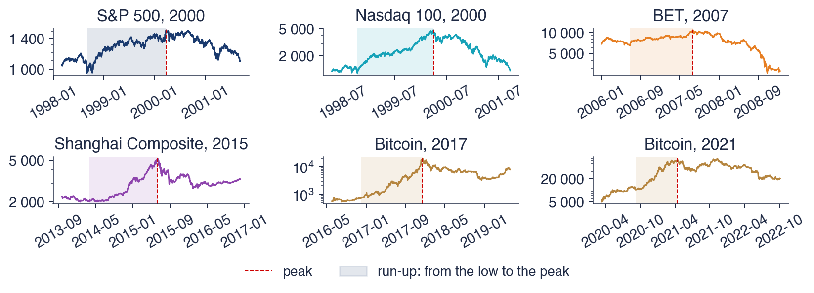

Bucharest University of Economic Studies IDA Institute Digital Assets Blockchain Research Center AI4EFin Artificial Intelligence for Energy Finance Romanian Academy, Institute for Economic Forecasting MSCA Digital Finance
Every few years a market rises much faster than the income it can be expected to generate, and then falls. The Nasdaq 100 index of technology shares more than quadrupled between October 1998 and March 2000 and lost two thirds of its value in the following year; Bitcoin multiplied its price about 26 times in 2017 and then lost 83%. Afterwards such episodes are easy to name. The question of this chapter is harder: can a speculative bubble be recognised in the price series while it is still growing, and can the moment of its end be estimated?
The chapter gives two statistical answers. The first comes from rational-expectations theory: a bubble that investors hold knowingly must grow, on average, at an explosive rate, so a bubble leaves the trace of an autoregressive root above one in the log price. The right-tailed unit-root tests of Phillips, Shi and Yu look for this trace and date the episodes. The second comes from the log-periodic power law (LPPL) model of Johansen, Ledoit and Sornette, which describes a bubble as growth that accelerates faster than exponentially, decorated with oscillations that become faster and faster, and ending at a critical time \(t_c\).
Both tools are applied to daily and weekly closes of the S&P 500, the Nasdaq 100, the Bucharest Exchange Trading (BET) index, the Shanghai Composite and Bitcoin. The results are mixed, and the chapter reports them as they are. The explosive-root tests date the run-ups well, but late and without saying when they will end. The LPPL fits describe the run-ups closely, yet their critical time moves with the data, and over the whole sample the alarms of the LPPL indicator are not followed by crashes more often than ordinary days. Judging such a method requires a protocol fixed in advance, with false alarms and base rates.

Six run-ups and crashes in the course data: daily closes on a log scale, from six months before the low of the run-up to eighteen months after the peak. The shaded area is the run-up from the low to the peak; the dashed red line marks the peak.
What you will be able to do
Describe a bubble through the fundamental value and through its statistical signatures.
Explain why a rational bubble must grow at an explosive rate, and test for explosive roots with the SADF and GSADF statistics.
Write the LPPL equation and interpret each of its seven parameters.
Estimate the LPPL model with the two-step method of Filimonov and Sornette and check the filter conditions.
Build a confidence indicator from many windows and evaluate its alarms with false alarms and base rates.
Chapter plan
MotivationThe question of the chapter, the route, the reading and the tools.
Bubbles in historyFour centuries of manias, fundamental value and bubble, six episodes in the course data.
Rational bubbles and explosive rootsWhy a rational bubble must explode; the SADF, GSADF and BSADF tests on the Nasdaq 100, Bitcoin, BET and Shanghai.
The LPPL modelCrashes as critical points, super-exponential growth, the hazard rate and the LPPL equation, log-periodicity and the filter.
EstimationThe two-step method of Filimonov and Sornette, the cost landscape and six fits 30 days before the peak.
Confidence from many windowsThe LPPLS confidence indicator, its behaviour around four peaks and a critical time that moves with the data.
SummaryKey ideas, formulas, self-assessment and a project idea.
Motivation
The first section states the chapter's question, explains how the chapter is meant to be studied, and lists the learning outcomes, the reading and the tools.
The question is whether a speculative bubble can be recognised in a price series before it bursts. Two definitions make it precise. A speculative bubble is a price that rises far above the value justified by the expected cash flows of the asset, sustained by the expectation that the asset can later be sold to someone else at a higher price. A crash is a large fall of the price in a short time; in this chapter, a fall of at least 20% from the peak. The two notions are separate: a bubble can end with a slow decline instead of a crash, and a crash can come without a bubble before it.
The route has four stages. The history of bubbles supplies the examples and the statistical signatures to look for. Rational bubbles lead to explosive autoregressive roots and to the right-tailed unit-root tests of Phillips, Shi and Yu, which reverse the Dickey–Fuller test of Chapter 3. The LPPL model of Johansen, Ledoit and Sornette adds a shape for the run-up and a date for its end, the critical time. The last stage is statistical: estimating the model, combining many estimation windows into an indicator, and evaluating the indicator over the whole sample, including the periods in which nothing happened.
In brief
Question: can a speculative bubble be recognised in a price series before it bursts?
a speculative bubble: a price that rises far above the value justified by the expected cash flows of the asset, sustained by the expectation of selling it later at a higher price
a crash: a large fall of the price in a short time (here: at least 20% from the peak)
Route of the chapter
bubbles in history and the statistical signatures of a bubble
rational bubbles and explosive roots: the right-tailed unit-root tests of Phillips, Shi and Yu (link with Chapter 3)
the LPPL model of Johansen, Ledoit and Sornette: super-exponential growth, log-periodic oscillations, the critical time
estimation, confidence from many windows and an honest evaluation of crash prediction
This chapter is written for self-study and has no seminar. Each section ends with a recap of its main points, and the worked examples are meant to be redone on paper before the solution is read: the Blanchard–Watson bubble, the Nasdaq 100 window, the LPPL value computed by hand and the Shanghai fit all need only a calculator. After each chart, an interpretation slide gives the numbers behind it; the useful exercise is to read the chart first and compare one's own reading with the interpretation.
The lecture notebook produces every chart and every number of the chapter. Changing one setting there, such as the length of the estimation window, the filter conditions or the alarm threshold, and seeing how the conclusion changes is the best way to understand how fragile some of the results are. The self-assessment at the end and the quiz of the chapter on the course site check the main ideas. The prerequisites are log prices and log returns from Chapter 1, the Dickey–Fuller test from Chapter 3 and ordinary least squares (OLS) regression.
In brief
This chapter is for self-study
there is no seminar
each section ends with a recap
read a section, then redo its worked example on paper before you look at the solution
after each chart, read the interpretation slide and compare it with your own reading of the chart
Run the lecture notebook: every chart and number of the slides is produced there
change one setting (the window, the filter, the threshold) and see how the conclusion changes
Check yourself with the self-assessment at the end and with the quiz of Chapter 13 on the course site
Prerequisites: log returns and log prices (Chapter 1), the Dickey–Fuller test (Chapter 3), OLS regression
The first two outcomes are economic and econometric. A bubble is defined as the gap between the price and an unobserved fundamental value, so it can be studied only through its consequences for the price path. The main consequence, for a bubble that rational investors hold, is explosive growth; testing for it uses the supremum augmented Dickey–Fuller (SADF) and generalised supremum augmented Dickey–Fuller (GSADF) statistics, which compute the augmented Dickey–Fuller (ADF) regression of Chapter 3 on many sub-samples.
The other outcomes concern the LPPL model. Its equation has seven parameters, each with an interpretation: the critical time, the level, the size and the exponent of the power-law growth, and the amplitude, the frequency and the phase of the oscillations. Estimation uses the two-step method of Filimonov and Sornette, and every fit is checked against a set of filter conditions before it is counted as a bubble signal. Finally, many fits on windows of different lengths are combined into a confidence indicator, and the alarms of the indicator are judged against the base rate of crashes, with all false alarms counted.
In brief
Describe a bubble by its fundamental value and by its statistical signatures
Explain why a rational bubble must grow at an explosive rate and test for explosive roots with SADF and GSADF
Write the LPPL equation and interpret each of its seven parameters
Estimate LPPL with the two-step method of Filimonov and Sornette and check the filter conditions
Build a confidence indicator from many windows and evaluate its alarms honestly, with false alarms and base rates
The chapter's Python code writes the SADF and GSADF statistics and the LPPL calibration explicitly, without a special package, so that every step can be followed. The data are the daily closes of the S&P 500, the Nasdaq 100, the BET, the Shanghai Composite and Bitcoin from EOD Historical Data (EODHD); weekly series are formed from the daily closes where a test requires them. The lecture notebook opens in Google Colab and runs without a local installation.
In brief
Textbook background: Huang and Petukhina (2022) (unit roots and nonlinear least squares, the tools of this chapter)
Data: daily closes of the S&P 500, Nasdaq 100, BET, Shanghai Composite and Bitcoin (EODHD)
Section summary
The question is therefore twofold: recognising a bubble while it grows, and dating its end. The rest of the chapter answers the first part with explosive-root tests and the second with the LPPL model, and then asks how good these answers are when judged without hindsight.
Bubbles in history
The section collects the historical evidence: the classic manias, the crashes of 1929 and 1987, the definition of a bubble through the fundamental value, and six run-ups and crashes in the course data that serve as test cases for the rest of the chapter.
The tulip mania in the Netherlands, in 1636–1637, is the oldest well-known example. Contracts on rare tulip bulbs traded at extreme prices and collapsed in February 1637. The painting on the slide, Flora's wagon of fools by Hendrik Gerritsz Pot, is a satire made around the time of the collapse. Garber (1990) argues that part of the story is a myth: rare bulbs were expensive for good reasons, and the case for a mania rests mainly on the prices of the common bulbs.
Later episodes include the South Sea Company in 1720, Wall Street in 1929, Japan in 1989, the dot-com shares in 2000, housing in 2007 and the cryptocurrencies in 2017 and 2021. Kindleberger and Aliber (2005) describe a common pattern across them: a new story that seems to justify higher prices, easy credit, rising prices that attract new buyers who did not care about the asset before, and finally a panic in which everyone tries to sell at the same time. The pattern is a narrative, not a test, but it suggests what to look for in the data: an acceleration of prices and an end that comes from within the market.
The crash of October 1929 ended the boom of the 1920s and opened the Great Depression. The crash of 19 October 1987, Black Monday, is the largest one-day fall of the Dow Jones index, and it came without any major news on that day. The two photographs show the crowd outside the New York Stock Exchange on 29 October 1929 and the Amsterdam exchange two days after Black Monday.
The 1987 crash started the literature of this chapter. Sornette, Johansen and Bouchaud (1996) found in the years before 1987 a price acceleration with oscillations that became faster as the crash approached, a pattern later formalised as the LPPL model. The daily data of this course start in 1990, so 1987 is known here only through the literature; the later bubbles are studied with the course's own data.
A crash without news points to an endogenous cause. If no new information arrived on the day of the fall, the fall cannot be the reaction to that information; the market itself must have become fragile before, so that a small disturbance could trigger a large collective sale. This view, of a crash as the end of a gradual build-up rather than as the response to a shock, is the starting point of the LPPL model.
the end of the boom of the 1920s and the start of the Great Depression
19 October 1987 (Black Monday)
the largest one-day fall of the Dow Jones index, without any major news that day
Sornette, Johansen and Bouchaud (1996) found accelerating, log-periodic oscillations in the years before 1987; this observation started the LPPL literature
the daily data of this course start in 1990: we study 1987 through the literature and later bubbles with our own data
A crash without news suggests an endogenous cause: the market itself became fragile
The fundamental value of an asset is the present value of the cash flows it is expected to pay. For a share, with dividends \(D_{t+k}\) paid \(k\) periods from now and a constant discount rate \(r\) per period,
where \(E_t[\cdot]\) is the expectation given the information available at time \(t\). The bubble component is the part of the price that this sum does not explain, \(B_t = P_t - F_t\).
The difficulty is that \(F_t\) is not observed. It depends on expectations of dividends far into the future and on the discount rate, and small changes in either change \(F_t\) a lot. A statistician therefore cannot measure \(B_t\) directly; the only option is to derive the implications that a bubble has for the price path and to test those. This is what the explosive-root tests and the LPPL model do, each with its own implication.
Two views of financial markets frame the debate. In the efficient-markets view, prices reflect the available information, and the "bubbles" are visible only with hindsight (Fama, 2014): a large rise followed by a fall is consistent with a rational revision of expectations. In the behavioural view, herding and the extrapolation of past returns push prices away from value (Shiller, 2015).Greenwood, Shleifer and You (2019) bring evidence that matters for this chapter: large run-ups of industry portfolios do raise the probability of a later crash, even if most of them do not end in one.
In brief
Fundamental value\(F_t\)
the present value of the expected future cash flows (dividends \(D\)), discounted at the rate \(r\)
\(D_{t+k}\): the dividend paid \(k\) periods from now; \(E_t[\cdot]\): the expectation given the information available at \(t\); \(r\): the discount rate per period
Bubble component
\(B_t = P_t - F_t\), the part of the price \(P_t\) not explained by fundamentals
\(F_t\) is not observed: we can only test the implications of a bubble in the price path
Two views
efficient markets: prices reflect information; “bubbles” are visible only with hindsight Fama (2014)
Question for the room Choose “the close at the end of the horizon” and 18 months. How far below its peak of 12 June 2015 is the Shanghai Composite then?
Answer
37% below the peak, less than the largest fall of 49% within the same 18 months: after the low of January 2016 the price recovered in part. The two measures answer different questions: how large the fall was and where the price stayed.
Question for the room Set the horizon to 3 months. Which episode has the largest fall within the first 3 months after the peak?
Answer
Bitcoin, 2017: the lowest close within the first 91 days is 64% below the peak of 16 December 2017; next come Bitcoin 2021 (50%), Shanghai (43%) and the Nasdaq 100 (36%), while the S&P 500 falls only 11%. At 12 months the order is almost the same, but the S&P 500 reaches 27% and the Nasdaq 100 66%: part of the fall comes slowly.
The chart has six panels, one per episode: the S&P 500 and the Nasdaq 100 in 2000, the BET in 2007, the Shanghai Composite in 2015 and Bitcoin in 2017 and 2021. Each panel plots the daily close on a log scale, from six months before the low of the run-up to eighteen months after the peak. The shaded area marks the run-up, from its low to its peak, and the dashed red line marks the peak.
On a log scale, a constant growth rate is a straight line, so the slope of each curve is its growth rate. The run-ups differ a lot in slope and in shape: the Shanghai Composite is almost flat for several months and then rises steeply, Bitcoin in 2017 climbs by more than an order of magnitude, while the S&P 500 rises with large swings. The falls after the peak also differ, from the long slide of the Nasdaq 100 to the collapse of the BET in 2008.
In brief
Daily closes, log scale, from six months before the low of the run-up to eighteen months after the peak; shaded: the run-up from the low to the peak
The table summarises each run-up by three numbers. The rise is \(P_{\text{peak}}/P_{\text{low}} - 1\); the growth per year is \(\ln(P_{\text{peak}}/P_{\text{low}})\) divided by the length of the run-up in years, a continuously compounded rate; the fall is the lowest close in the year after the peak, relative to the peak. The S&P 500 rose by 60% from 31 August 1998 to 24 March 2000, a growth of 30% per year, and fell by 27% within a year. The Nasdaq 100 rose by 317%, at 97% per year, and fell by 66%.
The other episodes confirm the range. The BET rose by 68% between 27 June 2006 and 24 July 2007, at 48% per year, and lost 50% in the following year. The Shanghai Composite rose by 159% from 20 March 2014 to 12 June 2015, at 77% per year, and lost 49%. Bitcoin rose by 2476% in about a year to 16 December 2017, a growth of 312% per year, then lost 83%; in 2021 it rose by 527% in seven months, at 309% per year, and fell by 53%.
The episodes are not equally strong. Bitcoin multiplied its price about 26 times in a year, while the S&P 500 rose by 60% in a year and a half, a fast but not extraordinary pace for a broad index. A method that recognises bubbles should therefore not give the same verdict for all six; how it ranks them is one of the tests of the method.
In brief
Episode
Low
Peak
Rise
Growth p.a.
Fall in 1 year
S&P 500, 2000
31 August 1998
24 March 2000
60%
30%
27%
Nasdaq 100, 2000
8 October 1998
27 March 2000
317%
97%
66%
BET, 2007
27 June 2006
24 July 2007
68%
48%
50%
Shanghai Composite, 2015
20 March 2014
12 June 2015
159%
77%
49%
Bitcoin, 2017
1 December 2016
16 December 2017
2476%
312%
83%
Bitcoin, 2021
8 September 2020
13 April 2021
527%
309%
53%
Growth p.a.: \(\ln(P_{\text{peak}}/P_{\text{low}})\) divided by the length of the run-up in years; fall: the lowest close in the year after the peak, relative to the peak
Bitcoin multiplied its price 26 times in about a year; the S&P 500 rose much less: not every peak is a bubble of the same strength
A bubble is the part of the price above the fundamental value (13.1), which is not observed, so a bubble can be studied only through its implications for prices. The six episodes of the course data have run-ups between 60% and 2476%, followed by falls between 27% and 83% within a year.
The signatures to look for are explosive and super-exponential growth, oscillations that accelerate towards the end of the run-up, and then an end. The next two sections turn each signature into a model and a test.
In brief
A bubble is a price above the fundamental value \(F_t\); \(F_t\) is not observed
Six episodes in our data: run-ups of 60% to 2476%, followed by falls of 27% to 83% within a year
Signatures: explosive and super-exponential growth, accelerating oscillations, then an end
Section summary
History supplies the examples and suggests the signatures, but it does not say which rise is a bubble while it is under way. The next section derives the first testable implication, explosive growth, from the theory of rational bubbles.
Rational bubbles and explosive roots
The section shows that a bubble held by rational investors must grow at an explosive rate, simulates such a bubble, and builds the right-tailed unit-root tests that look for explosive episodes. The tests are then applied to the Nasdaq 100, Bitcoin, the BET and the Shanghai Composite.
In a market without arbitrage opportunities and with risk-neutral investors, today's price equals the discounted expected value of tomorrow's price plus tomorrow's dividend:
\[P_t = \frac{E_t[P_{t+1} + D_{t+1}]}{1+r}.\]
(13.2)
Solving this equation forward, by substituting the same relation for \(P_{t+1}\),\(P_{t+2}\) and so on, gives the fundamental value (13.1), provided the discounted expected price \(E_t[P_{t+k}]/(1+r)^k\) goes to zero. The fundamental value is one solution, but not the only one.
Any price \(P_t = F_t + B_t\) also satisfies (13.2), as long as the bubble component satisfies \(E_t[B_{t+1}] = (1+r)B_t\). Substituting into (13.2) shows why: \(F_t\) satisfies the equation by itself, and the extra term \(B_t\) cancels on both sides exactly when its discounted expected value next period equals its value today. Iterating gives \(E_t[B_{t+k}] = (1+r)^k B_t\): the bubble must grow, in expectation, at the rate \(r\). The economic reason is simple: an investor buys an asset above its value only if the overvaluation is expected to grow fast enough to pay the required return.
Since \(1 + r > 1\), the bubble component is an explosive process, in the sense of Chapter 3: an autoregression with a coefficient above one. This gives the testable implication. If dividends are integrated of order one, \(I(1)\), the fundamental value is also \(I(1)\), and the price is \(I(1)\) without a bubble but explosive with one. Explosive behaviour in prices that is absent from the dividends is the statistical trace of a rational bubble.
In brief
No-arbitrage pricing: \(P_t = \dfrac{E_t[P_{t+1} + D_{t+1}]}{1+r}\); the fundamental value \(F_t\) is one solution
in words: today's price is the discounted expected value of tomorrow's price plus tomorrow's dividend
every \(P_t = F_t + B_t\) with \(E_t[B_{t+1}] = (1+r)\,B_t\) is also a solution
The bubble must grow, in expectation, at the rate \(r\): \(E_t[B_{t+k}] = (1+r)^k B_t\)
an investor holds an asset above its value only if the overvaluation is expected to grow
\(1+r > 1\): the bubble component is an explosive process
Consequence: if dividends are \(I(1)\) (Chapter 3), the price is \(I(1)\) without a bubble and explosive with one
A bubble that grows forever is not realistic. Blanchard and Watson (1982) proposed a bubble that can burst: each period it survives with probability \(\pi\) and then grows to \(\frac{1+r}{\pi}B_t\); otherwise it bursts and \(B_{t+1}\) falls to about zero. The expected value next period is
so the condition of the previous slide holds, and the bursting bubble is still rational.
With \(r = 2\%\) and \(\pi = 0.98\) per period, the bubble grows in each period in which it survives by \(1.02/0.98 - 1 = 4.08\%\), twice the required return. The extra growth is the compensation for the risk of a burst: an investor who holds the bubble loses it with probability 2% each period and must be paid for this risk while it lasts. The number of periods until the burst has a geometric distribution, so the expected lifetime is \(1/(1-\pi) = 50\) periods. The bubble survives more than \(k\) periods with probability \(0.98^k\), which equals one half at \(k = \ln 0.5/\ln 0.98 \approx 34\): half of these bubbles burst within 34 periods.
The example contains the whole logic of rational bubbles. The bubble is fully rational for each holder, yet it grows faster than the interest rate while it lasts, and its size at the burst grows with its age. The longer it lasts, the larger the fall when it ends.
In brief
Blanchard and Watson (1982): each period the bubble survives with probability \(\pi\) and then grows to \(\frac{1+r}{\pi}B_t\); otherwise it bursts (\(B_{t+1} \approx 0\))
Question for the room Set π = 0.90 (with r = 2%). By how much does the bubble grow in a period in which it survives?
Answer
By 1.02/0.90 − 1 = 13.3% per period, against 4.08% for π = 0.98: the more likely a burst, the faster the bubble must grow while it survives, so that the mean stays at 1 + r. The expected lifetime falls to 1/(1 − 0.90) = 10 periods.
Question for the room ▶ raises r. With r = 4%, the explosive AR(1) has ρ = 1.04. By how much is a shock multiplied after 100 periods?
Answer
By 1.04¹⁰⁰ = 50.5, against 1.02¹⁰⁰ = 7.24: the factor grows exponentially with the number of periods, so doubling the rate roughly squares it (7.24² ≈ 52, close to 50.5). A shock now doubles in 17.7 periods instead of 35.
The left panel plots 400 periods of a simulated price. The fundamental value, in dark blue, is a random walk that stays between about 20 and 25 over the whole sample. The price, in red, is the fundamental value plus a Blanchard–Watson bubble with \(r = 2\%\) and \(\pi = 0.98\). Most of the time the two lines coincide; twice the price moves away from the fundamental value at an accelerating pace and returns abruptly when the bubble bursts.
In the path shown, the first explosive episode goes downward, to about \(-250\), before it ends near period 170, and the second goes upward, to almost 100, before it bursts near period 345. A negative price cannot occur for a real asset, since the owner can always walk away from it; for a share only bubbles with a positive sign are economically meaningful, so only the second episode is a picture of a real bubble.
The right panel plots three first-order autoregressive, AR(1), processes \(y_t = \rho y_{t-1} + \varepsilon_t\) over 200 periods, driven by the same shocks: \(\rho = 0.9\) in green, \(\rho = 1\) in dark blue and \(\rho = 1.02\) in red. The first two stay within a band of about 20 units around zero, while the third separates from them after about 50 periods and grows steeply after that.
In brief
Left: fundamental value (random walk) plus a Blanchard–Watson bubble (\(r = 2\%\), \(\pi = 0.98\)), 400 periods; right: \(y_t = \rho y_{t-1} + \varepsilon_t\) with the same shocks and \(\rho = 0.9\), \(1\), \(1.02\)
The simulated bubble grows, bursts and restarts. In this path the bubble component reaches 71 at its largest and bursts 2 times after reaching a large size. The first bubble of this path is negative and drives the price below zero, which free disposal rules out for a real asset: a price cannot be negative, so a rational bubble must be nonnegative. Between the explosive episodes the price follows the fundamental value, so the price series alternates between random-walk behaviour and explosive behaviour. A test that looks at the whole sample at once sees a mixture; a test that looks at the right sub-sample sees the explosion.
The three AR(1) processes are the three cases of Chapter 3. With \(\rho = 0.9\) the process reverts to its mean and ends the 200 periods at \(-0.79\); with \(\rho = 1\) it wanders without a fixed level and ends at 15.5; with \(\rho = 1.02\) it explodes and ends at 228. The explosive case is easy to quantify: a shock is multiplied by \(1.02^k\) after \(k\) periods, so it doubles after \(\ln 2/\ln 1.02 \approx 35\) periods and is multiplied by \(1.02^{100} = 7.24\) after 100 periods. A root only slightly above one is invisible over short spans and dominant over long ones.
This is the idea of the tests that follow. A rational bubble makes the log price explosive during the run-up, with a root \(\rho > 1\). Detecting such a root, in the right part of the sample, is the statistical trace of the bubble.
In brief
The bubble grows, bursts, restarts: in this path it reaches 71 and bursts 2 times after a large size
the price inherits the explosive episodes; between them it follows the fundamental value
the first bubble of this path is negative and drives the price below zero: free disposal rules this out for a real asset, so a rational bubble must be nonnegative
where \(\Delta y_t = y_t - y_{t-1}\),\(a\) is the intercept, \(\varepsilon_t\) the error and \(\rho\) the AR(1) coefficient of \(y_t\). The test statistic is the \(t\)-statistic of \(\hat\delta\), and the regression can be augmented with lagged differences, as in the ADF test.
The hypotheses are reversed relative to Chapter 3. There, following Dickey and Fuller (1979), the null hypothesis \(\delta = 0\) (unit root) is tested against \(\delta < 0\) (stationarity), and it is rejected for large negative \(t\)-statistics, in the left tail. Here the alternative of interest is \(\delta > 0\), an explosive root, and the null is rejected for large positive \(t\)-statistics, in the right tail. The regression is the same; only the direction of the evidence changes.
A single test on the whole sample has a serious problem: a bubble occupies only a part of the sample, and the crash that follows it looks like strong mean reversion. The explosive run-up pushes \(\hat\delta\) up, the crash pushes it down, and the average says little. The remedy is to compute the statistic on many windows. The notation describes the windows by fractions of the sample: \(r_1, r_2 \in [0, 1]\), the statistic \(\mathrm{ADF}_{r_1}^{r_2}\) uses the observations from \(r_1T\) to \(r_2T\), and \(r_0\) is the fraction of the smallest window allowed.
In brief
The regression of Chapter 3 on a window of the log price \(y_t = \ln P_t\): \(\Delta y_t = a + \delta\, y_{t-1} + \varepsilon_t\), with \(\delta = \rho - 1\)
bubbles: \(H_0\): \(\delta = 0\) (unit root) against \(H_1\): \(\delta > 0\) (explosive), the right tail: reject for large \(t\)-statistics
Problem: a bubble occupies only a part of the sample, and the crash after it looks like mean reversion
one ADF on the whole sample has almost no power: we must compute the test on many windows
Notation
\(\Delta y_t = y_t - y_{t-1}\); \(a\): the intercept; \(\varepsilon_t\): the error; \(\rho\): the AR(1) coefficient of \(y_t\)
\(r_1, r_2 \in [0,1]\): fractions of the sample; \(\mathrm{ADF}_{r_1}^{r_2}\): the \(t\)-statistic of \(\hat\delta\) on the window from \(r_1T\) to \(r_2T\); \(r_0\): the smallest window
All the statistics of this family take a supremum, the largest value of the ADF statistic over a set of windows. The logic is that of a search: a single window in which the statistic is large is enough to signal an explosive episode, wherever that window is. The price of the search is that the supremum is larger than any single statistic even under the null hypothesis, so it needs its own critical values.
The SADF statistic of Phillips, Wu and Yu (2011) fixes the start of the window at the first observation and moves the end forward:
It works well when the sample contains one bubble. After a first bubble and crash, however, every later window still contains the crash, which pulls the statistic down, so SADF loses power against a second bubble.
Because the start can move past an earlier crash, GSADF can detect several bubbles in one sample. The smallest window recommended by the authors is \(r_0 = 0.01 + 1.8/\sqrt{T}\) of the sample, which shrinks as the sample grows.
In brief
\(\sup\): the largest value of the ADF statistic over all the windows considered
a single large value, in any window, is enough to signal an explosive episode
GSADF answers whether the sample contains an explosive episode; the backward SADF (BSADF) statistic answers when. For each date \(r_2\) it keeps the end of the window fixed at that date and searches over all starts:
The statistic at date \(r_2\) uses only data up to \(r_2\), so it can be computed in real time. GSADF is simply the largest BSADF over all dates. Following Phillips, Shi and Yu (2015b), an episode starts when BSADF crosses its critical value and must last at least \(\log T\) observations, where \(\log\) is the natural logarithm; the minimum length prevents single noisy crossings from being reported as bubbles.
The distributions of these statistics are not standard and are obtained by Monte Carlo simulation. The data are simulated under the null hypothesis as a random walk with a weak drift, \(y_t = T^{-1} + y_{t-1} + \varepsilon_t\); the drift \(T^{-1}\) is so small that the process has a unit root, not an explosive one. Each simulated series goes through the same computation as the data, and the quantiles of the simulated statistics are the critical values. For BSADF this gives a critical value for each date, since the number of windows grows with \(r_2\).
The reading is the same for all three statistics. A value above the 95% critical value rejects the unit root at the 5% level in favour of an explosive root; a value below it means that the explosive behaviour, if present, is not separated from a random walk by this test.
In brief
BSADF (date-stamping)
one statistic for each date \(r_2\), using only data up to \(r_2\)
\(\mathrm{BSADF}(r_2) = \sup_{r_1} \mathrm{ADF}_{r_1}^{r_2}\): the largest statistic over all starts \(r_1\) of windows ending at \(r_2\)
an episode starts when BSADF crosses its critical value and lasts at least \(\log T\) observations Phillips, Shi and Yu (2015b) (\(\log\): the natural logarithm)
The distributions are not standard: critical values by Monte Carlo
simulated under a random walk with a weak drift, \(y_t = T^{-1} + y_{t-1} + \varepsilon_t\)
the drift \(T^{-1}\) is very small: a unit root, not an explosive root, under \(H_0\)
Reading: an ADF, SADF or GSADF statistic above its 95% critical value rejects the unit root in favour of an explosive root
The data are the weekly log closes of the Nasdaq 100 from January 1990 to December 2004, \(T = 782\) weeks. The smallest window is \(r_0 = 0.01 + 1.8/\sqrt{782} = 0.074\) of the sample, that is 58 weeks. The example computes BSADF at the week of the peak, 24 March 2000: among all the windows that end in that week, the largest statistic comes from the window that starts on 17 January 1992.
On this window, with \(n = 427\) weekly changes, OLS gives
The \(t\)-statistic of the slope is \(t = \hat\delta/\mathrm{SE}(\hat\delta) = 0.0060/0.0021 = 2.91\), where SE is the standard error, computed from the unrounded estimates. This is the largest statistic over all starts, so BSADF at the peak equals 2.91, well above its 95% critical value of 0.54.
The sign is what matters. A positive \(\hat\delta\) means \(\hat\rho = 1 + \hat\delta > 1\): the higher the log price at the end of last week, the larger the expected rise this week. In a random walk the weekly change does not depend on the level; in a stationary series a high level predicts a fall. Here a high level predicts a further rise, which is the mark of an explosive phase.
In brief
Weekly log closes of the Nasdaq 100, \(T = 782\) weeks; \(r_0 = 0.074\), i.e. a smallest window of 58 weeks
end of the window: 24 March 2000, the week of the peak; among all start points the largest statistic comes from the start 17 January 1992
OLS on this window (\(n = 427\) weekly changes): \(\widehat{\Delta y_t} = -0.0336 + 0.0060\, y_{t-1}\)
so BSADF at the peak is 2.91, above its 95% critical value of 0.54
Reading: \(\hat\delta > 0\) means \(\hat\rho = 1 + \hat\delta > 1\): the higher the price, the larger the next weekly rise, the mark of an explosive phase
Question for the room ▶ moves the end r₂. When does the ADF statistic over the window [0, r₂] first exceed the 95% critical value of SADF (1.48)?
Answer
In the week of 8 January 1999, more than a year before the peak of March 2000; SADF reaches 2.72. The whole-sample ADF (−1.27) does not reject because the collapse of 2000–2002 pulls the statistic of the whole sample down; the supremum over windows avoids this.
Worked example
\[\begin{gathered}\mathrm{BSADF}(r_2)=\sup_{r_1\in[0,r_2-r_0]}\mathrm{ADF}_{r_1}^{r_2}\\ \text{episode: }\mathrm{BSADF}(r_2)>cv(r_2)\ \text{for at least }\log T\text{ observations}\end{gathered}\]
Question for the room The 1998 episode starts on 23 October 1998. In which week does it become a dated episode, with 7 weeks above the critical value?
Answer
On 4 December 1998, the seventh week in a row above the critical value: in real time the minimum-length rule confirms an episode only after log T ≈ 7 weeks, although its start date remains 23 October 1998. The end of the episode (3 November 2000) is known even later.
Question for the room Move the end of the window to 29 December 2000, after the collapse. Is BSADF still above its 95% critical value?
Answer
No: BSADF is −0.20, below the critical value 0.53; the largest statistic now comes from the start of the sample (5 January 1990). Once the window contains the fall, high prices are no longer followed by large rises, and δ̂ turns negative for every start.
Question for the room Switch to the 99% level. How many episodes of at least 7 weeks does BSADF date?
Answer
3: July – September 1997, November 1998 – July 1999 and August 1999 – April 2000. With higher critical values the long 1998–2000 episode splits in two and ends in April 2000, a month after the peak, not in November 2000. SADF (2.72) and GSADF (2.92) stay above their 99% critical values (1.92 and 2.86).
Question for the room ▶ raises the minimum length of an episode. At 20 weeks, how many episodes remain?
Answer
3: September 1996 – March 1997 (26 weeks), May – December 1997 (32) and October 1998 – November 2000 (107). The short episodes of 1995 and 1998 disappear; with length 1 BSADF would date 17 episodes, many of one week.
The top panel plots the weekly close of the Nasdaq 100 on a log scale, from about 200 in 1990 to almost 5000 at the peak of March 2000 and back to about 1000 in 2002. The bottom panel plots the BSADF statistic, in dark blue, and its 95% critical value, the dashed red line, obtained from 1000 simulated random walks. The critical value stays between about 0.1 and 0.8 over the whole period. The shaded bands, repeated in both panels, are the dated episodes, the periods in which BSADF stays above its critical value for at least 7 weeks.
BSADF starts only after the first 58 weeks, the smallest window. It stays below zero for most of the early 1990s, jumps above the critical value in mid-1995, and then crosses it several times until the large episode of 1998–2000, in which it reaches its maximum of about 2.9 in March 2000. After the peak it falls back and, from the end of 2000, stays mostly below the critical value.
In brief
Top: weekly close, log scale; bottom: BSADF and its 95% critical values (Monte Carlo, 1000 random walks); shaded: dated episodes (at least 7 weeks above the critical value)
The ADF statistic on the whole sample is \(-1.27\), against a 95% critical value of \(-0.13\) for the right-tailed test: no evidence of explosive behaviour. The SADF statistic is 2.72, with a critical value of 1.48, and the GSADF statistic is 2.92, with a critical value of 2.28: both reject the unit root in favour of explosive behaviour. The contrast is the problem described above. The crash of 2000–2002 is part of the whole sample and hides the bubble from a single test; the window searches find it.
BSADF dates 6 episodes. The longest runs from 23 October 1998 to 3 November 2000, 107 weeks, and covers the main run-up. Shorter explosive bursts appear from June 1995, so the boom of the 1990s came in waves, as Phillips, Wu and Yu (2011) found.
The end date of the long episode is late: it comes more than seven months after the peak of 27 March 2000. BSADF compares the current window with a random walk, and a window that contains a long run-up and a short fall still looks explosive for a while. The test dates exuberance; it does not announce the crash, and its end date says more about the speed of the statistic than about the market.
In brief
Whole-sample ADF \(-1.27\) (95% critical value \(-0.13\)): no evidence
SADF 2.72 (critical value 1.48) and GSADF 2.92 (critical value 2.28): explosive behaviour
the crash of 2000–2002 hides the bubble from a single test on the whole sample
BSADF dates 6 episodes; the longest runs from 23 October 1998 to 3 November 2000 (107 weeks)
short explosive bursts already from June 1995: the 1990s boom came in waves, as Phillips, Wu and Yu (2011) found
The end date is late: the statistic stays high for months after the peak; the test dates exuberance, it does not announce the crash
Question for the room Switch to 99%. Does GSADF reject the unit root for all three markets?
Answer
Yes: Bitcoin 3.85 against 2.63, BET 3.53 against 2.86, Shanghai 3.46 against 2.60. The dated episodes change, though: BET keeps five short episodes, and Bitcoin only its 2017 phase, split in two.
Question for the room With the first 60% of the Shanghai sample (data up to 22 May 2015, before the peak of 12 June), is the 2014–2015 episode already dated?
Answer
Yes: BSADF has been above its critical value since 28 November 2014, for 26 weeks in a row, so the episode is dated and still running. BSADF uses only the data up to each date, so dating the start is possible in real time; the end (26 June 2015) appears only after the peak.
The chart applies the same procedure to three markets, one per column: Bitcoin from 2014 to 2023, the BET from 2000 to 2012 and the Shanghai Composite from 2010 to 2018, all with weekly log closes. The top row plots the price on a log scale with the dated episodes shaded; the bottom row plots BSADF in dark blue and its 95% critical value as a dashed red line.
The shaded bands are few and clear. Bitcoin has two, one during 2017 and early 2018 and a shorter one at the start of 2021. The BET has three: two in 2002–2006, during its long rise, and one in 2008–2009, during its fall. The Shanghai Composite has one, during the steep rise of 2014–2015. In each panel BSADF stays near or below zero for most of the sample and rises steeply in the shaded periods.
In brief
Weekly log closes; top: price with the dated episodes; bottom: BSADF and its 95% critical values; Bitcoin 2014–2023, BET 2000–2012, Shanghai Composite 2010–2018
The GSADF statistic is 3.85 for Bitcoin, 3.53 for the BET and 3.46 for the Shanghai Composite, all above their 95% critical values, which lie between 2.15 and 2.29. All three markets therefore have explosive episodes. For Bitcoin, the dated episodes are April 2017 to May 2018 and January to May 2021; for the Shanghai Composite, November 2014 to June 2015.
The BET is more instructive. Its explosive phase is December 2003 to May 2006, not the run-up to July 2007 that appears in the table of six episodes: that run-up was strong, 68% in a year, but not explosive in the sense of the test. The BET flag of September 2008 to April 2009 marks the collapse, not a bubble. An accelerating fall also gives \(\hat\delta > 0\): when the price falls faster the lower it is, the level predicts the change with a positive coefficient. The test detects explosiveness in either direction, so the dates must always be read against the price chart.
The Bitcoin episode of 2017 lasts until May 2018, five months after the peak of 16 December 2017, again because the windows that include the run-up keep the statistic high for a while after the peak. The pattern of the Nasdaq 100 repeats: the tests date the run-up well and its end late.
In brief
GSADF: Bitcoin 3.85, BET 3.53, Shanghai 3.46; above their 95% critical values (2.18, 2.29, 2.15)
Bitcoin: April 2017 – May 2018 and January 2021 – May 2021; Shanghai: November 2014 – June 2015
BET: the explosive phase is December 2003 – May 2006, not the run-up to July 2007, which was strong but not explosive
the BET flag of September 2008 – April 2009 is the collapse: an accelerating fall also gives \(\hat\delta > 0\); always read the dates against the price chart
The Bitcoin 2017 episode lasts until May 2018, again well after the peak
The first limit concerns fundamentals. An explosive price is a bubble only if the fundamentals are not explosive themselves; a period of explosively growing dividend expectations would also produce an explosive price. The better test is on the ratio of the price to the dividend, which removes the fundamental part; Phillips, Shi and Yu (2015a) do this for the S&P 500. For Bitcoin there are no dividends at all, so the test on the price is the only option, and its verdict is about explosiveness, not about overvaluation.
The second limit concerns volatility. The critical values come from a random walk with constant variance, while financial returns show changing volatility, and changing volatility distorts the size of the test: the true probability of a false rejection is no longer 5%. A wild bootstrap, which resamples the residuals with random signs while keeping their size at each date, gives critical values that are robust to this problem (Phillips and Shi, 2020).
The third limit concerns timing. BSADF uses only past data, so it can run in real time and signal a bubble while it is under way. It says nothing, however, about when the bubble will end; the statistic stays high after the peak and falls only once the crash is part of the data. The LPPL model of the next section tries to answer exactly this question.
In brief
Fundamentals
an explosive price is a bubble only if the fundamentals are not explosive
better: test the price–dividend ratio (Phillips, Shi and Yu (2015a) for the S&P 500); for Bitcoin there are no dividends at all
A rational bubble grows in expectation at the rate \(r\),\(E_t[B_{t+1}] = (1+r)B_t\), so it is an explosive process. The right-tailed ADF test (13.3) takes \(\delta > 0\) as the alternative; SADF and GSADF (13.4) take the supremum over windows, and BSADF dates the episodes using data up to each date.
The Nasdaq 100, Bitcoin, the BET and the Shanghai Composite all have explosive episodes. The tests date the run-up, often with an end several months after the peak, and they do not date the crash.
In brief
A rational bubble grows in expectation at the rate \(r\): \(E_t[B_{t+1}] = (1+r)B_t\), an explosive process
Right-tailed ADF: \(H_1\): \(\delta > 0\); SADF and GSADF take the supremum over windows; BSADF dates the episodes
Nasdaq 100, Bitcoin, BET and Shanghai all show explosive episodes; the tests date the run-up, not the crash
Section summary
Explosive-root tests answer the first half of the chapter's question: they recognise a bubble while it grows, with data available at the time. They do not say when it ends. For that, a model of the shape of the run-up is needed, one that contains the end date as a parameter; this is the LPPL model.
The LPPL model
The section builds the log-periodic power law model step by step: the idea of a crash as a critical point, super-exponential growth, the link between the hazard rate of a crash and the growth of the price, the log-periodic oscillations, and the conditions a fitted model must satisfy to describe a credible bubble.
Didier Sornette, a physicist at ETH Zürich, proposed with Anders Johansen and Olivier Ledoit the model known by their initials as the Johansen–Ledoit–Sornette (JLS) model (Johansen, Ledoit and Sornette, 2000). Its starting point is the behaviour of traders: each trader partly imitates the traders around them. Imitation creates positive feedback. Rising prices attract buyers, the new buyers push prices higher, and the higher prices attract further buyers, so growth accelerates instead of proceeding at a constant rate.
Physics offers an analogy. Near a critical point, such as water close to boiling or a magnet close to the temperature at which it loses its magnetisation, local interactions between the parts of a system become coordinated over long distances, and the system becomes extremely sensitive to small disturbances. In the JLS model the market approaches such a state as imitation spreads: more and more traders hold the same position, and a small piece of news can trigger a collective sale.
The critical time \(t_c\) is the most probable moment of the end of the bubble. It is not the certain date of a crash. In the model a crash becomes increasingly likely as \(t_c\) approaches, but it may not happen at all: the bubble may also end with a slow decline or move into a different regime. This distinction matters for the evaluation at the end of the chapter, since an estimate of \(t_c\) is an estimate of the end of a regime, not a forecast that a crash will occur on that date.
where \(a\) is the initial log price and \(g\) the constant growth rate. Most of the time, over long periods, stock indices grow roughly in this way, with noise around the line.
Super-exponential growth has a growth rate that itself increases with time, so on a log scale the curve bends upward. The simplest form with this property is the power-law singularity
\[\ln P(t) = A + B\,(t_c - t)^m, \qquad B < 0,\ 0 < m < 1,\]
(13.5)
where \(t_c - t\) is the time left until the critical time, \(A\) the log price reached at \(t_c\),\(B\) the size of the growth and \(m\) the exponent. Because \(B < 0\) and \((t_c - t)^m\) shrinks as \(t\) approaches \(t_c\), the log price rises towards \(A\).
With \(m < 1\) the exponent \(m - 1\) is negative, so the growth rate goes to infinity as \(t \to t_c\), while the log price itself stays finite, \(\ln P(t_c) = A\). A quantity with an infinite rate of change at a finite date is called a finite-time singularity. Such growth cannot continue past \(t_c\); it must end at or before the critical time.
In brief
Exponential growth
constant growth rate, \(\ln P(t) = a + g\,t\)
\(d \ln P/dt = g\)
\(a\): the initial log price; \(g\): the constant growth rate; \(d\ln P/dt\): the growth rate of the price at time \(t\)
a straight line on a log scale
Super-exponential growth
the growth rate increases with time
on a log scale the curve bends upward
power-law singularity: \(\ln P(t) = A + B\,(t_c - t)^m\), with \(B < 0\) and \(0 < m < 1\)
\(t_c\): the critical time; \(t_c - t\): the time left until it; \(A\): the log price reached at \(t_c\); \(B\): the size of the growth; \(m\): the exponent
Question for the room ▶ changes m. With m = 0.2, what is the growth rate of the singularity just before tc?
Answer
5.52, against 3.98 for m = 0.5, although at the start the rate is only 0.20 (against 0.50): a small m keeps the growth flat for a long time and concentrates it near tc. The exponential rate stays at 0.8 throughout.
The chart compares three paths on the interval from 0 to the critical time \(t_c = 1\). The left panel plots the log price: exponential growth with \(g = 0.8\) in dark blue, the power-law singularity (13.5) with \(A = 1\),\(B = -1\) and \(m = 0.5\) in red, and the same singularity with log-periodic oscillations added, in green. The right panel plots the growth rate \(d\ln P/dt\) of each path, with the critical time marked by a dotted vertical line.
On the left the three curves start at zero and end at similar levels, near 0.8 to 0.9. The exponential path is a straight line; the red path lies below it most of the time and crosses it only near the end, when it bends steeply upward; the green path follows the red one with a sequence of flat steps and rises. On the right the exponential growth rate is a horizontal line, the red rate climbs slowly and then explodes near \(t_c\), and the green rate oscillates around the red one with waves that become taller and shorter as \(t_c\) approaches.
In brief
Left: log price; right: its growth rate \(d \ln P/dt\); exponential (\(g = 0.8\)), power-law singularity (\(A = 1\), \(B = -1\), \(m = 0.5\), \(t_c = 1\)) and the same with log-periodic oscillations
At the start the three paths have similar growth rates: 0.8 for the exponential path and 0.50 for the singular one. Early in a bubble the paths are therefore hard to tell apart, and only a long sample or a sample close to the end shows the difference. The exponential rate stays at 0.8 throughout. The singular rate rises from 0.50 at the start to 0.70 halfway, at \(t = 0.5\), and to 3.98 just before \(t_c\): most of the acceleration is concentrated in the last part of the interval.
The oscillations ride on the accelerating trend. Each oscillation is a period of fast growth followed by a period of slow growth, a correction in the language of markets, and the oscillations become faster near \(t_c\). The next slides derive both features, the accelerating trend and the accelerating oscillations, from the hazard rate of a crash.
In brief
All three start with similar growth rates: early in a bubble the paths are hard to tell apart
The exponential rate stays at 0.8; the singular rate rises from 0.50 to 0.70 halfway and to 3.98 just before \(t_c\)
The oscillations ride on the accelerating trend and become faster near \(t_c\): the next slides explain why
The first part is the expected growth over a short interval \(dt\), with a drift \(\mu(t)\) that may change in time. The second is ordinary noise: \(W\) is a Brownian motion, the continuous-time version of a random walk, and \(\sigma\) the volatility. The third is the crash: \(j\) is a jump process that equals 0 before the crash and jumps to 1 at the crash, and the jump removes a fraction \(\kappa\) of the price.
The probability of the crash is described by the hazard rate \(h(t)\): the probability per unit of time that the crash happens now, given that it has not happened yet. Over a short interval, the probability of a crash between \(t\) and \(t + dt\) is approximately \(h(t)\,dt\). A hazard rate that rises over time means that each day without a crash is followed by a day in which the crash is more likely.
In brief
JLS: the relative price change before the crash has three parts
\(dP/P = \mu(t)\,dt + \sigma\,dW - \kappa\, dj\)
\(\mu(t)\,dt\): the expected growth over a short interval \(dt\); \(\mu(t)\): the drift, which may change in time
\(\sigma\,dW\): the ordinary noise; \(W\): a Brownian motion (a continuous random walk); \(\sigma\): the volatility
\(\kappa\, dj\): the crash; \(j\) jumps from 0 to 1 at the crash, which removes a fraction \(\kappa\) of the price
Hazard rate\(h(t)\)
the probability per unit of time that the crash happens now, given that it has not happened yet
In the absence of arbitrage, and with risk-neutral traders, the expected price change must be zero before the crash: \(E[dP] = 0\). The noise term has mean zero and \(E[dj] = h(t)\,dt\), so taking expectations in (13.6) gives \(\mu(t)\,dt - \kappa\,h(t)\,dt = 0\), that is
\[\mu(t) = \kappa\,h(t).\]
The drift must exactly pay for the expected crash loss. The higher the hazard, the faster the price must grow while the crash has not occurred: risk and growth increase together. This reverses the usual intuition, in which a rising price signals that risk is falling.
Imitation near a critical point gives a hazard rate that rises towards \(t_c\) with oscillations:
where \(\alpha > 0\) is the level of the hazard, \(\beta\) the relative size of the oscillations, \(\omega\) their log-frequency and \(\phi'\) their phase. Since \(m < 1\), the factor \((t_c - t)^{m-1}\) grows without bound as \(t \to t_c\). Before the crash, \(d\ln P \approx \mu(t)\,dt = \kappa\,h(t)\,dt\) apart from the noise, so the log price is the integral of \(\kappa h(t)\). For the power-law part, the integral of \(\kappa\alpha(t_c - t)^{m-1}\) is \(-\frac{\kappa\alpha}{m}(t_c - t)^m\) plus a constant, which is the term \(B(t_c - t)^m\) of (13.5) with \(B = -\kappa\alpha/m < 0\). The oscillating part integrates in the same way to \((t_c - t)^m\) times a cosine with a different phase. Together they give the equation on the next slide.
In brief
No arbitrage: \(E[dP] = 0\)\(\Rightarrow\)\(\mu(t) = \kappa\, h(t)\)
\(E[dj] = h(t)\,dt\), so the expected change is zero only if the drift pays for the expected crash loss
the higher the hazard, the faster the price must grow: risk and growth increase together
Imitation near a critical point gives a hazard that rises towards \(t_c\) with oscillations
The first two terms are the power-law singularity (13.5); the third adds oscillations whose amplitude shrinks with \((t_c - t)^m\) and whose argument depends on the logarithm of the time left to \(t_c\). The equation describes the log price during the bubble, up to the end of the regime; it says nothing about the size of the crash or about the path after \(t_c\).
The table on the slide lists the seven parameters. The critical time \(t_c\) is the most probable end of the bubble and must lie after the last observation used in the fit. \(A > 0\) is the log price that would be reached at \(t_c\) if the bubble lasted until then. \(B < 0\) gives the size of the power-law growth, and \(0 < m < 1\) how strongly it accelerates. \(C\) is the size of the oscillations, smaller in absolute value than \(|B|\),\(\omega\) their angular log-frequency, usually between 2 and 25, and \(\phi\) their phase, in \([0, 2\pi)\).
Three parameters, \(t_c\),\(m\) and \(\omega\), enter the equation nonlinearly, and this is what makes estimation hard. The other four enter linearly once the nonlinear ones are fixed, after a rewriting in which the phase \(\phi\) disappears; this is the basis of the estimation method of the next section.
The oscillation term \(\cos(\omega\ln(t_c - t) - \phi)\) is periodic in \(\ln(t_c - t)\), not in \(t\). It completes one full cycle each time \(\ln(t_c - t)\) changes by \(2\pi/\omega\). The peaks \(t_n\) of the cosine satisfy \(\omega\ln(t_c - t_n) - \phi = 2\pi k\) for successive integers \(k\), so the logarithms of the times left to \(t_c\) at successive peaks differ by \(2\pi/\omega\). Exponentiating,
The time left to \(t_c\) shrinks by the same factor \(\lambda\) at each cycle, so the cycles become shorter and shorter, in a geometric progression.
This property is called discrete scale invariance: the pattern looks the same when the time to \(t_c\) is rescaled by the factor \(\lambda\), but not by an arbitrary factor. A natural interpretation is a hierarchy in the market, of individual traders, groups of traders and institutions, in which imitation propagates level by level, each level with its own time scale.
The worked example makes the factor concrete. With \(\omega = 8\),\(\lambda = e^{2\pi/8} = 2.19\). If a correction happens 200 days before \(t_c\), the next one comes about \(200/2.19 \approx 91\) days before \(t_c\), then about 42 and then about 19 days before \(t_c\). With \(\omega = 6.28\),\(\lambda = 2.72\), and with \(\omega = 10\),\(\lambda = 1.87\). The empirical literature reports values of \(\lambda\) near 2 (Sornette, 2017), which corresponds to \(\omega\) near 9.
In brief
\(\cos(\omega \ln(t_c - t) - \phi)\) is periodic in \(\ln(t_c - t)\), not in \(t\): one full cycle each time \(\ln(t_c - t)\) changes by \(2\pi/\omega\)
successive peaks \(t_n\) satisfy \(\dfrac{t_c - t_n}{t_c - t_{n+1}} = \lambda = e^{2\pi/\omega}\): the time left to \(t_c\) shrinks by the same factor at each cycle
Discrete scale invariance
the pattern looks the same when time to \(t_c\) is rescaled by \(\lambda\) (as in a hierarchy of traders, groups, institutions)
Worked example: with \(\omega = 8\), \(\lambda = e^{2\pi/8} = 2.19\)
if a correction happens 200 days before \(t_c\), the next one comes about \(200/2.19 \approx 91\) days before \(t_c\), then about 42, then 19
\(\omega = 6.28\) gives \(\lambda = 2.72\); \(\omega = 10\) gives \(\lambda = 1.87\); the empirical literature reports \(\lambda\) near 2 Sornette (2017)
Question for the room Set ω = 4. By what factor λ does the time left to tc shrink from one correction to the next?
Answer
λ = e2π/4 = 4.81: a correction 200 days before tc is followed by one 42 days before it, then 9. A small ω gives few, sparse cycles; for ω = 8 the factor is 2.19.
Question for the room Set m = 0.3 (the rest as in the example). What is P at t = 1.99?
Answer
About 2234, against 2658 for m = 0.5: a smaller m leaves a larger part of the rise for the last moments before tc, where the price reaches eA = 2981 for any m. At t = 1 the price is 973 for any m, because there tc − t = 1.
Question for the room ▶ goes through the six fits. How many have ω inside the filter range 2 ≤ ω ≤ 25?
Answer
4: the S&P 500 and BET stop at ω = 1.0, the lower edge of the search space [1, 50]. The search space is wider than the filter: a fit can have its smallest SSR at a value the filter rejects.
Question for the room Does the curve on the right (m = 0.5, ω = 8, C/|B| = 0.08) pass the damping condition m|B|/(ω|C|) ≥ 1 of the filter?
Answer
No: 0.5/(8 · 0.08) = 0.78 < 1. Although |C| is much smaller than |B|, the oscillating term is multiplied by ω in the derivative, and with ω = 8 the oscillations would make the hazard rate negative at times; the condition holds only for C/|B| ≤ 0.0625 at m = 0.5 and ω = 8.
The chart takes the equation apart on the interval from 0 to \(t_c = 1\). The left panel plots the power-law part \(A + B(t_c - t)^m\) with \(A = 1\) and \(B = -1\) for three exponents: \(m = 0.3\) in dark blue, \(m = 0.5\) in red and \(m = 0.8\) in green. All three start at zero and rise towards 1 at \(t_c\); the curve with \(m = 0.8\) is almost straight, while the curve with \(m = 0.3\) stays low for a long time and rises steeply near \(t_c\).
The middle panel plots the oscillation \((t_c - t)^m\cos(\omega\ln(t_c - t))\) with \(m = 0.5\) for \(\omega = 6\), in purple, and \(\omega = 10\), in orange. Both start at 1 and swing between positive and negative values; the swings shrink and become faster towards \(t_c\), and the orange curve, with the larger \(\omega\), completes more cycles. The right panel plots the full LPPL path with \(m = 0.5\),\(\omega = 8\) and \(C/|B| = 0.08\): a rising curve with flat steps that become shorter and closer together near \(t_c\).
In brief
Left: \(A + B(t_c - t)^m\) for \(m = 0.3, 0.5, 0.8\); middle: the oscillation \((t_c - t)^m \cos(\omega \ln(t_c - t))\) for \(\omega = 6\) and \(10\); right: the full LPPL path; \(t_c = 1\)
The exponent \(m\) controls where the growth is concentrated. A smaller \(m\) concentrates it close to \(t_c\): the curve is flat for a long time and then shoots up. At the extremes, \(m\) close to 1 gives an almost straight line, a trend with a nearly constant growth rate that is hardly a bubble, and \(m\) close to 0 gives a curve that is flat almost everywhere and jumps at \(t_c\). Estimates of \(m\) near either end of the interval \((0, 1)\) therefore do not describe a credible bubble.
The oscillation term shrinks with \((t_c - t)^m\) and speeds up, with cycles that shorten by the factor \(\lambda\) of (13.9). A larger \(\omega\) gives a smaller \(\lambda\) and therefore more cycles before \(t_c\). Added to the power-law trend, the oscillations appear as corrections that come more and more often while becoming smaller in absolute size.
Real run-ups, fitted in the next section, show this mixture: an accelerating trend with corrections that come more and more often. Whether the oscillations are a real feature of the data or a flexible term that improves the fit is one of the questions the literature has debated.
In brief
A smaller \(m\) concentrates the growth close to \(t_c\): the curve is flat for a long time, then shoots up
\(m\) close to 1 is almost a straight line: hardly a bubble; \(m\) close to 0 is a jump at \(t_c\)
The oscillation term shrinks with \((t_c - t)^m\) and speeds up: the cycles get shorter by the factor \(\lambda\)
a larger \(\omega\) gives more cycles before \(t_c\)
Real run-ups (Section 5) show this mixture: an accelerating trend with corrections that come more and more often
The parameters are \(A = 8\),\(B = -1.2\),\(C = 0.08\),\(m = 0.5\),\(\omega = 8\),\(\phi = 0\) and \(t_c = 2\), with time measured in years. At \(t = 1\), the time left is \(t_c - t = 1\), so \((t_c - t)^m = 1\) and \(\ln 1 = 0\), which gives \(\cos 0 = 1\). The log price is \(\ln P = 8 - 1.2 + 0.08 = 6.880\), and the price is \(P = e^{6.880} = 973\).
At \(t = 1.75\) the time left is 0.25, so \((0.25)^{0.5} = 0.500\) and \(\ln 0.25 = -1.386\). The cosine is \(\cos(8\cdot(-1.386)) = 0.095\), and
so \(P = 1642\). At \(t = 1.99\) the time left is 0.01, so \((0.01)^{0.5} = 0.100\), and with \(\ln 0.01 = -4.605\) the cosine is \(\cos(8\cdot(-4.605)) = 0.654\). The log price is \(8 - 0.120 + 0.005 = 7.885\), and \(P = 2658\).
The price rises from 973 to 2658 as \(t\) goes from 1 to 1.99, and it would reach \(e^A = e^8 = 2981\) at \(t_c\). Most of the rise comes in the last months: from \(t = 1.75\) to \(t = 1.99\), in less than three months, the price rises by more than 60%. The oscillation term is small in this example, 0.08 in log price at \(t = 1\) and a few thousandths at the two later dates, but it shifts the times of the faster and slower phases of growth.
A fit of (13.8) is called qualified only if its parameters describe a credible bubble. The conditions of this chapter follow Shu and Zhu (2020), who build on Sornette et al. (2015). The first group concerns the parameters. \(B < 0\) means that the price rises. \(0.01 \le m \le 0.99\) means that the growth accelerates while the price at \(t_c\) stays finite. \(2 \le \omega \le 25\) excludes oscillations that are too slow to be observed or so fast that they fit noise. The number of oscillations in the window \([t_1, t_2]\) must be large enough:
The left-hand side counts the half-cycles, peaks and troughs, of the cosine between \(t_1\) and \(t_2\), since one full cycle takes a change of \(2\pi/\omega\) in \(\ln(t_c - t)\).
Two further conditions concern the critical time and the hazard. The critical time must be close, relative to the length of the window: \(t_2 \le t_c \le t_2 + 0.2\,(t_2 - t_1)\). The damping condition
\[\frac{m|B|}{\omega|C|} \ge 1\]
keeps the hazard rate positive. The growth rate of (13.8) is a power-law term proportional to \(m|B|\) plus an oscillating term of size about \(\omega|C|\) when \(\omega\) is much larger than \(m\); if the oscillating term were larger, the growth rate, and with it the hazard \(h(t) = \mu(t)/\kappa\), would become negative at some dates, which the model does not allow.
The second group concerns the residuals. Every fitted price must lie within 15% of the observed price. The residuals, seen as a function of \(\ln(t_c - t)\), must show the log-periodic cycle according to the Lomb periodogram (Lomb, 1976), a periodogram for unevenly spaced points, at the 10% level. Finally, the residuals must be stationary: the Dickey–Fuller and Phillips–Perron tests of Chapter 3 must reject a unit root at the 10% level.
\(B < 0\): rising price; \(0.01 \le m \le 0.99\): accelerating growth with a finite price at \(t_c\)
\(2 \le \omega \le 25\): neither too slow nor too fast oscillations; at least 2.5 oscillations in the window, \(\frac{\omega}{\pi}\ln\frac{t_c - t_1}{t_c - t_2} \ge 2.5\)
\(t_2 \le t_c \le t_2 + 0.2\,(t_2 - t_1)\): the end is close, relative to the length of the window \([t_1, t_2]\)
damping \(\dfrac{m|B|}{\omega|C|} \ge 1\): the hazard rate stays positive
Conditions on the residuals
every fitted price within 15% of the observed price; the Lomb periodogram Lomb (1976) confirms the log-periodic cycle (level 10%)
Lomb periodogram: a periodogram for unevenly spaced points, here of the residuals as a function of \(\ln(t_c - t)\)
the residuals are stationary: the Dickey–Fuller and Phillips–Perron tests of Chapter 3 reject a unit root (level 10%)
Imitation creates a hazard rate (13.7) that grows towards \(t_c\); the no-arbitrage condition \(\mu(t) = \kappa h(t)\) turns it into super-exponential growth of the price. Integrating gives the LPPL equation (13.8), with seven parameters.
The oscillations are log-periodic: the time left to \(t_c\) shrinks by \(\lambda = e^{2\pi/\omega}\) from one cycle to the next. A fit counts as a bubble signal only if it passes the filter of parameter and residual conditions.
In brief
Imitation creates a hazard rate that grows towards \(t_c\); no arbitrage turns it into super-exponential growth
Log-periodic: cycles shrink by \(\lambda = e^{2\pi/\omega}\); a fit counts only if it passes the filter
Section summary
The LPPL model turns the vague signatures of the first section into an equation with an end date. To be useful it must be estimated from noisy data, and the estimation turns out to be the weakest link: the next section shows how it is done and how well the critical time is identified.
Estimation
The section presents the two-step method of Filimonov and Sornette, which reduces the estimation to a search over three parameters, looks at the shape of the cost function that is minimised, and fits the model to the six episodes of the course data with data ending 30 days before the peak.
The two-step method of Filimonov and Sornette (1/2)
where \(\mathrm{LPPL}(t)\) is the right-hand side of (13.8). A direct search over seven parameters is unreliable: the cost function has many local minima, and a numerical optimiser ends in one of them depending on where it starts. Filimonov and Sornette (2013) reduce the search to three parameters.
The trick is to expand the cosine. With \(\tau = t_c - t\),
where \(C_1 = C\cos\phi\) and \(C_2 = C\sin\phi\), by the formula for the cosine of a difference. The phase disappears from the equation and is replaced by a second linear coefficient.
After the expansion, the LPPL equation is linear in \(A\),\(B\),\(C_1\) and \(C_2\):
\[\ln P(t) = A + B\,f_t + C_1\,g_t + C_2\,h_t,\]
(13.10)
with \(f_t = \tau^m\),\(g_t = \tau^m\cos(\omega\ln\tau)\) and \(h_t = \tau^m\sin(\omega\ln\tau)\). Once \(t_c\),\(m\) and \(\omega\) are fixed, \(f_t\),\(g_t\) and \(h_t\) are known numbers for each date, and (13.10) is an ordinary linear regression.
In brief
Least squares over seven parameters has many local minima; Filimonov and Sornette (2013) reduce the search to three parameters
\(\min \mathrm{SSR} = \sum_{t=t_1}^{t_2} [\ln P_t - \mathrm{LPPL}(t)]^2\); SSR: the sum of squared residuals over the window \([t_1, t_2]\)
\(\mathrm{LPPL}(t)\): the right-hand side of the LPPL equation
Step 1 is linear. For given values of \((t_c, m, \omega)\),\(\ln P_t\) is regressed by OLS on a constant, \(f_t\),\(g_t\) and \(h_t\):
\[(\hat A, \hat B, \hat C_1, \hat C_2)' = (X'X)^{-1}X'y,\]
where \(X\) is the matrix with columns \(1, f_t, g_t, h_t\) and \(y\) is the vector of log prices. The residuals of this regression give the concentrated cost \(\mathrm{SSR}(t_c, m, \omega)\), a function of the three nonlinear parameters only, since the four linear ones are always set at their best values.
Step 2 is nonlinear: \(\mathrm{SSR}(t_c, m, \omega)\) is minimised over the search space \(t_c \in [t_2, t_2 + (t_2 - t_1)/3]\),\(m \in [0, 1]\) and \(\omega \in [1, 50]\). The code evaluates the cost on a grid of \(8\times 8\times 16\) points and starts the Nelder–Mead simplex algorithm, a derivative-free optimiser, from the best grid point. The grid protects against the local minima; the simplex refines the best candidate.
At the end the amplitude and the phase of the oscillation are recovered from the two linear coefficients: \(C = \sqrt{C_1^2 + C_2^2}\) and \(\phi = \operatorname{atan2}(C_2, C_1)\), the angle of the point \((C_1, C_2)\) in the interval \((-\pi, \pi]\). Note that the search space is wider than the filter: a fit can end at \(m\) near 1 or \(\omega\) near 1, and it is the filter, not the optimiser, that rejects such fits.
In brief
Step 1 (linear)
for given \((t_c, m, \omega)\), regress \(\ln P_t\) on \((1, f_t, g_t, h_t)\) by OLS
\((\hat A, \hat B, \hat C_1, \hat C_2) = (X'X)^{-1}X'y\); \(X\): the matrix with columns \(1, f_t, g_t, h_t\); \(y\): the vector of \(\ln P_t\)
this gives the concentrated cost \(\mathrm{SSR}(t_c, m, \omega)\), a function of three parameters only
Step 2 (nonlinear)
minimise \(\mathrm{SSR}(t_c, m, \omega)\) over the search space
Question for the room Limit ω to [2, 5]. Where is the global minimum over tc?
Answer
On 21 June 2000, still after the actual peak of 27 March 2000, with m = 0.99 and 4 local minima. Only for ω ≤ 3 does the minimum move to the edge of the grid (25 February 2000), with an SSR ratio of 1.49; for ω ≤ 7 the result is already the one of the lecture (19 July 2000).
The chart shows the cost function for the Nasdaq 100, with a window from the low of October 1998 to 30 days before the peak of March 2000. The left panel is a heat map of \(\log\mathrm{SSR}\) with the critical time \(t_c\) on the horizontal axis and the exponent \(m\) on the vertical axis; at each point the cost is minimised over \(\omega \in [2, 25]\), with the linear step solved for each of 135 360 grid points. Dark colours mean low cost; the red star marks the global minimum and the dashed orange line the actual peak.
The right panel is the profile of the cost: for each \(t_c\), the minimum SSR over \(m\) and \(\omega\), again with the actual peak marked. The heat map is almost uniformly dark over most of the plane, with high cost only for small \(m\) and \(t_c\) close to the end of the window. The profile is a wavy line that slopes slightly downward from March to August 2000, with regular peaks and valleys.
In brief
Nasdaq 100, window from the low of October 1998 to 30 days before the peak
left: \(\log \mathrm{SSR}\) over \((t_c, m)\), minimised over \(\omega \in [2, 25]\) (135 360 grid points, with the linear step solved at each point)
right: the minimum over \(m\) and \(\omega\) as a function of \(t_c\)
The profile over \(t_c\) has 5 local minima. An optimiser started at a different \(t_c\) can therefore end in a different valley and report a different critical time, with almost the same fit. The waves come from the oscillation term: shifting \(t_c\) shifts the phase of the log-periodic cycles relative to the data, and the fit alternately improves and worsens as the cycles of the model fall in and out of step with the corrections of the data.
The landscape is also flat. The worst and the best \(t_c\) on the profile differ by only 6.3% in SSR, so the data hardly distinguish a critical time in March from one in August. The global minimum lies at \(m\) near 1 and \(t_c\) on 19 July 2000, almost four months after the actual peak. With \(m\) near 1 the power-law term is nearly a straight line, so the best fit says that this window shows no clear acceleration; the data barely identify \(t_c\).
The lesson is that one LPPL fit is never enough. A single estimate of \(t_c\) from one window depends on the local minimum, on the window and on small changes in the data. The remedy, used in the next section, is to fit many windows and to keep only the fits that pass the filter.
In brief
The profile over \(t_c\) has 5 local minima: an optimiser started at a different \(t_c\) can end in a different valley
the waves come from the oscillation term: shifting \(t_c\) shifts the phase of the cycles
The landscape is flat: the worst and the best \(t_c\) differ by only 6.3% in SSR
the global minimum is at \(m\) near 1 and \(t_c\) = 19 July 2000, far after the actual peak: the data barely identify \(t_c\)
Lesson: one LPPL fit is never enough; we need many windows and the filter (Section 6)
Worked example: the Shanghai fit at the end of the window
The window for the Shanghai Composite runs from 20 March 2014 to 13 May 2015, 281 trading days. The nonlinear estimates are \(t_c = 2015.428\) in decimal years, that is 6 June 2015, \(m = 0.392\) and \(\omega = 5.50\). Step 1 then gives \(\hat A = 8.893\),\(\hat B = -1.270\),\(\hat C_1 = 0.020\) and \(\hat C_2 = 0.074\), so \(\hat C = \sqrt{0.020^2 + 0.074^2} = 0.076\).
The example computes the fitted value at the last date of the window, \(t_2 = 2015.361\). The time left is \(\tau = t_c - t_2 = 0.067\) years, about 24 days; \(\tau^m = 0.067^{0.392} = 0.347\) and \(\ln\tau = -2.702\). The argument of the oscillation is \(\omega\ln\tau = 5.50\cdot(-2.702)\), with \(\cos(\omega\ln\tau) = -0.656\) and \(\sin(\omega\ln\tau) = -0.754\). The three terms of (13.10) are the level \(\hat A = 8.893\), the power-law growth \(\hat B\tau^m = -0.440\) and the oscillation \(\tau^m(\hat C_1\cos + \hat C_2\sin) = -0.024\), so
In levels, the fitted value is \(e^{8.429} = 4579\) points against an observed 4376, an error of 4.7%, well within the 15% condition of the filter. The decomposition shows the roles of the terms: the level \(A\) is the log price that would be reached at \(t_c\), the power-law term measures how far below that level the price still is, and the oscillation adds a small correction that depends on the phase of the cycle at that date.
In brief
Shanghai Composite, window 20 March 2014 – 13 May 2015 (281 days); estimates: \(t_c = 2015.428\) (6 June 2015), \(m = 0.392\), \(\omega = 5.50\)
step 1 gives \(\hat A = 8.893\), \(\hat B = -1.270\), \(\hat C_1 = 0.020\), \(\hat C_2 = 0.074\), so \(\hat C = 0.076\)
Question for the room Move tc 30 days later, with m and ω fixed. By how much does the SSR rise?
Answer
By about 55%. With m and ω fixed, the SSR has a narrow valley around the estimate (+11% at 10 days); the landscape of “The cost landscape” is flat because there m and ω are re-estimated for every tc and compensate for the move.
Question for the room 90 days before the peak, how many of the six fits pass the parameter conditions?
Answer
One, Bitcoin 2017; Shanghai, the only qualified fit at 30 days, fails 90 days before. Whether a fit qualifies depends on the end date of its window, which is why the indicator uses many windows.
Question for the room Move the end of the window to the peak (0 days). Which fits pass the whole filter?
Answer
Only Shanghai, with the estimated tc 11 days after the peak. The S&P 500 and the Nasdaq 100 stay at m = 1 and at the upper bound of the search (190 and 178 days after the peak); even the data up to the peak do not make their run-ups super-exponential.
The chart has six panels, one per episode, each plotting the log price against time. The window of each fit runs from the low before the run-up to 30 calendar days before the peak. The red line is the LPPL fit, extended beyond the window up to the estimated critical time \(\hat t_c\); the dotted vertical line marks the end of the window \(t_2\), the dashed black line the actual peak and the dash-dot green line \(\hat t_c\). The data after the window, plotted in the colour of the series, were not used in the fit and are shown only for comparison.
Inside the windows the fits follow the data closely in all six panels. The differences appear after \(t_2\). For the S&P 500 and the Nasdaq 100 the extended fit keeps rising until a \(\hat t_c\) in August 2000, months after the peak, while the price flattens and falls. For the BET the estimated \(\hat t_c\) coincides with the end of the window, before the peak. For the Shanghai Composite \(\hat t_c\) falls a few days before the peak. For Bitcoin in 2017 and 2021 the extended fit rises past the peak, to a \(\hat t_c\) weeks later.
In brief
Window: from the low before the run-up to 30 calendar days before the peak; the fitted path is extended to the estimated \(t_c\); data after the window are shown only for comparison
The table gives, for each episode, the end of the window \(t_2\), the estimated critical time, the difference between \(\hat t_c\) and the actual peak in days, the estimates of \(m\) and \(\omega\), and two verdicts: whether the fit passes the parameter conditions of the filter and whether it also passes the residual conditions. For the S&P 500 the window ends on 23 February 2000 and \(\hat t_c\) is 21 August 2000, 150 days after the peak, with \(\hat m = 1.00\) and \(\hat\omega = 1.0\). For the Nasdaq 100 the window ends on 25 February 2000 and \(\hat t_c\) is 11 August 2000, 137 days after the peak, with \(\hat m = 1.00\) and \(\hat\omega = 5.9\).
The other four episodes give different pictures. For the BET, \(\hat t_c\) equals the end of the window, 22 June 2007, 32 days before the peak, with \(\hat m = 0.69\) and \(\hat\omega = 1.0\). For the Shanghai Composite, \(\hat t_c\) is 6 June 2015, 6 days before the peak of 12 June, with \(\hat m = 0.39\) and \(\hat\omega = 5.5\). For Bitcoin, \(\hat t_c\) is 22 February 2018, 68 days after the peak, in 2017, and 15 May 2021, 32 days after the peak, in 2021, with \(\hat m\) equal to 0.71 and 0.82 and \(\hat\omega\) equal to 14.1 and 17.4.
Only the Shanghai fit passes the whole filter, with \(\hat t_c\) within a week of the peak. The S&P 500 and Nasdaq 100 fits reach the boundary \(m = 1\) of the search space, which means that the windows show no super-exponential growth, and the S&P 500 and BET fits also reach the lower boundary \(\omega = 1\). The two Bitcoin fits place \(t_c\) too far after the end of the window for the condition on the critical time, and they fail the 15% error condition: the daily swings of Bitcoin are too large for one smooth path to stay within 15% of every observed price.
In brief
Episode
\(t_2\)
\(\hat t_c\)
Days to peak
\(\hat m\)
\(\hat\omega\)
Param.
All
S&P 500, 2000
23 February 2000
21 August 2000
+150
1.00
1.0
no
no
Nasdaq 100, 2000
25 February 2000
11 August 2000
+137
1.00
5.9
no
no
BET, 2007
22 June 2007
22 June 2007
\(-\)32
0.69
1.0
no
no
Shanghai Composite, 2015
13 May 2015
6 June 2015
\(-\)6
0.39
5.5
yes
yes
Bitcoin, 2017
16 November 2017
22 February 2018
+68
0.71
14.1
no
no
Bitcoin, 2021
14 March 2021
15 May 2021
+32
0.82
17.4
no
no
Days to peak: \(\hat t_c\) minus the actual peak; Param.: the fit passes the parameter conditions; All: it also passes the residual conditions
Only Shanghai passes the whole filter, with \(\hat t_c\) within a week of the peak; S&P 500 and Nasdaq 100 hit the boundary \(m = 1\): no super-exponential growth in these windows
Bitcoin fails the 15% error condition (its daily swings are too large for one smooth path) and the \(t_c\) condition (\(\hat t_c\) too far after \(t_2\))
The method of Filimonov and Sornette (2013) estimates four linear parameters by OLS and searches over the three nonlinear ones, \(t_c\),\(m\) and \(\omega\), using the linear form (13.10). The cost surface is rugged, with several local minima, and flat in the direction of \(t_c\), so the critical time is weakly identified.
One window gives one fit. With data ending 30 days before the peak, only one of the six episodes, the Shanghai Composite in 2015, gives a fully qualified fit.
In brief
Four linear parameters by OLS, three nonlinear ones (\(t_c\), \(m\), \(\omega\)) by search: the method of Filimonov and Sornette (2013)
The cost surface is rugged and flat in \(t_c\): the critical time is weakly identified
One window, one fit: only one of six episodes gives a fully qualified fit 30 days before the peak
Section summary
A single fit is fragile: it depends on the start of the window, which in real time is unknown, and on a cost function that barely distinguishes one critical time from another. The next section replaces the single fit with many fits on windows of different lengths and summarises them in one number.
Confidence from many windows
The section builds the LPPLS confidence indicator, the share of qualified fits among many windows that end on the same date. It shows the indicator around four peaks and shows how the estimated critical time moves as new data arrive.
The fits of the previous section started the window at the low before the run-up, a date known only after the bubble, since the low is identified as the low only once prices have risen. In real time the start of the bubble is unknown. The remedy of Shu and Zhu (2020) is to use many starts: for each end date \(t_2\), playing the role of today, the model is fitted on 29 windows \([t_2 - L, t_2]\), with lengths \(L = 750, 725, \dots, 50\) trading days.
The indicator is the share of the windows ending at \(t_2\) whose fit is qualified (Sornette et al., 2015). It lies between 0, when no window sees a bubble, and 1, when all windows do. The name LPPLS, for log-periodic power law singularity, is used in this literature for the same equation (13.8) and has given its name to the indicator.
The chapter uses two versions of the indicator. The parameter version counts fits that pass the conditions on \(B\),\(m\),\(\omega\),\(t_c\), the number of oscillations and the damping. The full version also requires the residual conditions: the 15% error, the Lomb test and stationary residuals, as in Shu and Zhu (2020). Both are computed only with data up to \(t_2\), so they are real-time indicators. An alarm is raised when the indicator exceeds a threshold fixed in advance, here 0.2.
In brief
So far \(t_1\) was the low before the run-up, a date known only after the bubble; in real time the start is unknown
remedy: for each end date \(t_2\) (today), fit LPPL on 29 windows \([t_2 - L, t_2]\), \(L = 750, 725, \dots, 50\) trading days Shu and Zhu (2020)
Indicator \(=\) share of the windows ending at \(t_2\) whose fit is qualified Sornette et al. (2015); 0: no window sees a bubble, 1: all do
LPPLS (LPPL singularity) is the name used for this indicator; the equation is the same
Question for the room Keep only the windows of at least 400 observations. What share of the Shanghai windows pass the condition on m?
Answer
13% (2 of 15), against 41% over all 29: in 13 of the 15 long windows the Shanghai fit puts m at an edge of the search space (0.001 or 0.999). For the Nasdaq 100 all the long windows pass this condition.
Question for the room Raise the bound of the tc condition to 0.33, the edge of the search space. How many Nasdaq 100 windows pass the parameter conditions?
Answer
12 of 29, against 11 with the bound 0.2; for Shanghai 7 against 5. For the Nasdaq 100 the condition that removes most windows is the one on m (only 69% meet it), not the one on tc.
The chart shows the 29 fits for two episodes, the Nasdaq 100 in 2000 on the left and the Shanghai Composite in 2015 on the right, with all windows ending 30 days before the peak. The horizontal axis is the window length \(t_2 - t_1\), in observations, from 50 to 750; the vertical axis is the estimated critical time. Green dots are fits that pass the parameter conditions and red crosses fits that fail them; the dashed red line is the actual peak and the dotted line the end of the windows \(t_2\).
For the Nasdaq 100 the green dots lie close to the peak, at window lengths of about 75 to 300 and 550 to 675 observations, while many red crosses lie far above, with \(\hat t_c\) as late as March 2001. For the Shanghai Composite most of the estimates lie between May and September 2015, the green dots are at window lengths between 250 and 350, and the longest windows give red crosses in 2016.
In brief
Estimated \(t_c\) for each of the 29 windows ending 30 days before the peak; green dots: the fit passes the parameter conditions; red crosses: it fails them
For the Nasdaq 100, with windows ending on 25 February 2000, 11 of the 29 windows pass the parameter conditions and 1 passes the whole filter, so the parameter indicator equals \(11/29 = 0.38\) on that date. The median \(\hat t_c\) of the qualified fits is 30 March 2000, and the range between their 10% and 90% quantiles runs from 25 February to 2 April 2000; the actual peak was on 27 March 2000. In this case the qualified fits point to the right weeks.
For the Shanghai Composite, with windows ending on 13 May 2015, 5 of the 29 windows pass the parameter conditions, and their median \(\hat t_c\) is 6 June 2015, against an actual peak on 12 June. The condition on \(m\) fails most often: only 41% of the Shanghai windows have \(0.01 \le m \le 0.99\), so most fits end at the boundary of the search space for the exponent.
The chart also shows a dependence on the window length. Short windows put \(t_c\) right after \(t_2\), while long windows spread it out, sometimes far into the future. The window length is therefore a modelling choice that the result depends on, even though it is easy to overlook; averaging over many lengths, as the indicator does, makes the dependence visible instead of hiding it.
In brief
Nasdaq 100 (end 25 February 2000): 11 of 29 windows pass the parameter conditions, 1 the whole filter
qualified \(\hat t_c\): median 30 March 2000, 10%–90% range 25 February 2000 – 2 April 2000; actual peak 27 March 2000
Shanghai (end 13 May 2015): 5 of 29 pass the parameter conditions; median \(\hat t_c\) 6 June 2015, actual peak 12 June 2015
the condition on \(m\) fails most often: only 41% of the Shanghai windows have \(0.01 \le m \le 0.99\)
Short windows put \(t_c\) right after \(t_2\); long windows spread it out: the window length is a hidden modelling choice
Question for the room Raise the alarm threshold to 0.3. Does Shanghai give any alarm before the peak of 12 June 2015?
Answer
No: the parameter version reaches at most 0.28 (22 April 2015). With the threshold 0.2 there are 4 alarm dates before the peak, from 15 April 2015; the threshold fixed in advance decides whether a weak signal becomes an alarm.
The chart covers two episodes, the Nasdaq 100 in 2000 and the Shanghai Composite in 2015, from 18 months before to 4 months after the peak. The log price is plotted on the left axis, in the colour of the series, and the indicator on the right axis, from 0 to 1, computed every 5 trading days. The green area is the parameter version of the indicator and the purple line the full version; the dashed red line marks the peak.
For the Nasdaq 100 the green area is high in two periods: a first one in the winter and spring of 1999, more than a year before the peak, and a second one in the last three months before the peak. The purple line stays low throughout. For the Shanghai Composite both versions are near zero for most of the period and rise together in the two months before the peak.
In brief
Log price (left axis) and the indicator (right axis) every 5 trading days, from 18 months before to 4 months after the peak
green area: parameter conditions; purple line: all conditions
Question for the room With the threshold 0.5, when is the first Bitcoin alarm before the peak of 16 December 2017?
Answer
On 3 November 2017, six weeks before the peak (once more on 8 December). The largest value, 0.66, comes on 29 December 2017, after the peak: it describes the run-up that has already ended.
The chart uses the same layout and colours for the BET in 2007 and Bitcoin in 2017; for Bitcoin, which trades every day, the indicator is computed every 7 days. For the BET the green area is high at the start of the period, in early 2006, then small for more than a year, apart from a short rise in early 2007, and high again around and after the peak of July 2007; the purple line rises mainly after the peak.
For Bitcoin the green area is present for most of the run-up, with bars that grow taller as the price rises and the tallest ones close to the peak of December 2017. The purple line, the full version, is almost always at zero.
In brief
The same layout and colours as in (1/2), for the BET (2007) and Bitcoin (2017); Bitcoin: one value every 7 days
For the Nasdaq 100 the parameter version reaches 0.52 on 7 April 1999, a year before the peak, and rises again in the last months before it; the full version stays below 0.14. For the Shanghai Composite both versions rise in the two months before the peak, and the full version reaches its maximum, 0.24, on 22 April 2015, seven weeks before the peak of 12 June.
For the BET the strongest full-filter signal, 0.28, comes on 28 August 2007, a month after the peak. At that date the windows contain the whole run-up and the beginning of the fall, and the fits describe the last part of the run-up, not the future. For Bitcoin in 2017 the parameter version reaches its maximum, 0.66, on 29 December 2017, after the peak of 16 December, while the full version is almost always 0, because the 15% error condition fails in nearly every window.
The indicator does light up during bubbles, but early, late and with gaps, and the choice of filter changes the picture completely: with the parameter conditions Bitcoin looks like a bubble for most of 2017, with all conditions it almost never does. A reader who sees only one of the two versions draws a different conclusion from a reader who sees the other.
In brief
Nasdaq 100: the parameter version reaches 0.52 on 7 April 1999, a year before the peak, and rises again in the last months; the full version stays below 0.14
Shanghai: both versions rise in the two months before the peak (maximum 0.24 on 22 April 2015)
BET: the strongest full-filter signal, 0.28, comes on 28 August 2007, after the peak: the fits then describe the last part of the run-up, not the future
Bitcoin 2017: the parameter version peaks at 0.66 on 29 December 2017; the full version is almost always 0 (the 15% error condition)
The indicator does light up in bubbles, but early, late and with gaps; the choice of filter changes the picture
Question for the room How many of the 38 Nasdaq 100 estimates of tc sit at the upper bound of the search, t₂ + (t₂ − t₁)/3?
Answer
36 of 38: the fit would like a later tc than the search allows, so the estimated tc moves with t₂ only because the bound moves. For Bitcoin 2017 only 3 of 39 reach the bound; there several estimates sit on or close to the line tc = t₂.
The chart follows the estimated critical time as the data grow. The start of the window is fixed at the low before the run-up, and the end \(t_2\) moves weekly from 8 months before to 1 month after the peak. The horizontal axis is \(t_2\), the vertical axis is the \(\hat t_c\) of the fit that ends at \(t_2\); green dots are fits that pass the parameter conditions and red crosses fits that fail them. The dotted diagonal is the line \(t_c = t_2\), a fit that places the end of the bubble at the last observation, and the dashed red line is the actual peak.
For the Nasdaq 100, on the left, the crosses form a straight line that rises steadily above the diagonal: as \(t_2\) moves from August 1999 to April 2000, \(\hat t_c\) moves from November 1999 to October 2000. These estimates lie at the upper end of the search interval \(t_2 + (t_2 - t_1)/3\), which moves forward with \(t_2\). Only two fits, in February 2000, interrupt the line with values close to the peak. For Bitcoin in 2017, on the right, the points stay close to the diagonal and follow it upward from May 2017 to January 2018, with green dots mainly from August 2017 onward.
In brief
Window start fixed at the low before the run-up; the end \(t_2\) moves from 8 months before to 1 month after the peak (weekly); each point: the \(\hat t_c\) of the fit ending at \(t_2\)
For the Nasdaq 100, over 38 end dates, \(\hat t_c\) ranges from 9 November 1999 to 30 October 2000, a span of 356 days, and none of these fits passes the parameter conditions. For Bitcoin in 2017, \(\hat t_c\) ranges from 21 May 2017 to 12 April 2018; 38% of the fits pass the parameter conditions, and the median error, the median distance between \(\hat t_c\) and the actual peak, is 65 days.
The two cases show two ways of failing. For Bitcoin many points lie close to the line \(t_c = t_2\): the fit says "the end is now", week after week, for months. For the Nasdaq 100 the estimate stays at the edge of the search space and moves forward with it. In both cases the estimated critical time follows the end of the data instead of staying at a fixed date. A forecast that keeps moving with the data is a description of the past, not a prediction.
The chart also shows how a false impression of success arises. Among the many fits, some placed \(t_c\) close to the actual peak. Picking, after the crash, the one window whose \(\hat t_c\) was right, and presenting it as the prediction, is look-ahead bias: it uses the knowledge of when the crash happened to choose the window.
In brief
Nasdaq 100: over 38 end dates \(\hat t_c\) ranges from 9 November 1999 to 30 October 2000 (356 days); none of these fits passes the parameter conditions
Bitcoin 2017: range 21 May 2017 – 12 April 2018; 38% of the fits pass; median error 65 days
Bitcoin: many points lie close to the line \(t_c = t_2\), the fit often says “the end is now”, week after week; Nasdaq 100: \(\hat t_c\) mostly sits at the upper bound of the search space
a forecast that keeps moving with the data is a description of the past, not a prediction
Picking, after the crash, the one window whose \(\hat t_c\) was right is look-ahead bias
The start of a bubble is unknown in real time, so the model is fitted on 29 windows of different lengths for each end date. The indicator is the share of qualified windows, and it depends strongly on the filter: the parameter version and the full version can tell different stories.
The estimated critical time moves with the end of the data. It should be reported through its spread over windows and over end dates, never as one value.
In brief
The start of a bubble is unknown: fit 29 windows for each end date
Indicator = share of qualified windows; it depends strongly on the filter
\(\hat t_c\) moves with the end of the data: report its spread over windows, never one value
Section summary
Many windows make the uncertainty of the LPPL fit visible and turn it into an indicator that can be computed in real time. Whether the indicator helps to anticipate crashes is a separate question, which the next section answers by evaluating its alarms over the whole sample.
An honest evaluation of crash prediction
The section lists the traps in evaluating crash predictions, runs the indicator over the whole sample of the S&P 500 and of Bitcoin with all its alarms, compares the hit rate after alarms with the base rate, and sets the results against the literature.
The first trap is look-ahead bias: using information that was not available at the date of the prediction \(t_2\). It enters in subtle ways: choosing the start of the window \(t_1\) at the low of the run-up, a date that is known only later; choosing the episodes to study after the crashes have happened; or choosing the filter conditions after seeing which ones give good results. Each of these choices uses the future to make the past look predictable.
The second trap is selection: studying only the bubbles that burst. The run-ups that ended without a crash, or that continued for years, are forgotten, although a method that raised an alarm during them was wrong. A sample made only of crashes cannot measure false alarms.
The third trap concerns false alarms and base rates. An alarm is useful only if a crash is more likely after an alarm than on an ordinary day. The relevant comparison is between \(P(\text{crash} \mid \text{alarm})\), the share of alarm dates followed by a crash, and \(P(\text{crash})\), the unconditional frequency of crashes over all dates. If crashes follow 7% of all dates, an alarm followed by a crash 7% of the time adds no information. A fair test fixes everything in advance, the windows, the filter, the threshold and the definition of a crash, and runs over the whole sample.
In brief
Look-ahead bias
using information from after \(t_2\)
choosing \(t_1\) at the low of the run-up, the episodes after the crash, or the filter after seeing the results
Selection
studying only the bubbles that burst
the run-ups that did not end in a crash are forgotten
False alarms and base rates
an alarm is useful only if a crash is more likely after an alarm than on an ordinary day
the comparison: \(P(\text{crash} \mid \text{alarm})\) against \(P(\text{crash})\), the unconditional frequency
A fair test fixes everything in advance (windows, filter, threshold, the definition of a crash) and runs over the whole sample
Question for the room Raise the crash size to 30%. What does the unconditional frequency become for the S&P 500?
Answer
2.3% of the dates, against 6.8% for 20%; the hit rate after alarms stays at 0%. The base rate depends on the crash definition, which is why the definition must be fixed before the alarms are compared with it.
The chart applies this protocol to the S&P 500 from January 1993 to September 2026, with the indicator computed every 5 trading days. A crash is defined as a fall of at least 20% within 182 days after the alarm date. The left panel plots the index on a log scale with the alarm dates of the parameter version at the threshold 0.2: green dots would mark alarms followed by a crash, red crosses mark false alarms.
All the alarms in the left panel are red crosses. They appear in clusters during steady rises: in 1995–1999, in 2006–2007, in 2012–2014, in 2017–2018 and in the last years of the sample. The right panel plots the hit rate, the share of the alarm dates followed by a crash, as a function of the threshold \(c\) from 0.05 to 0.4, for the parameter version and for the full version, with the unconditional frequency as a dashed red line. Both hit-rate lines lie below the dashed line at every threshold, between 0.02 and 0.03 at the two lowest thresholds and at zero from 0.2 upward.
In brief
S&P 500: indicator every 5 trading days, January 1993 – September 2026
a crash: a fall of at least 20% within 182 days after the alarm; right: hit rate by threshold
Question for the room Lower the crash size to 10%. How does the S&P 500 hit rate at c = 0.2 compare with the base rate?
Answer
It stays below it: 16.9% against 23.1%. S&P 500 alarms come in calm, steady run-ups, after which falls, even of 10%, are rarer than on an ordinary day.
Question for the room Lengthen the horizon to 365 days. What does the base rate of a 20% fall become for Bitcoin?
Answer
51%, against 47% at 182 days; after an alarm (c = 0.2) the rate is 55%. Falls of 20% are so frequent for Bitcoin that almost any rule seems to catch them: the relevant comparison is with the base rate.
The chart repeats the evaluation for Bitcoin from January 2014 to September 2026, with the indicator computed every 7 days. In the left panel the alarms of the parameter version at threshold 0.2 cluster at the start of 2014, in 2016–2017, at the end of 2020 and the start of 2021, and in 2024–2025; green dots, alarms followed by a fall of 20% or more within six months, are mixed with red crosses.
In the right panel the hit rate of the parameter version, in green, is close to the dashed line of the unconditional frequency at low thresholds and rises above it at higher thresholds. The full version, in purple, has points only at the two lowest thresholds, because at higher thresholds it never raises an alarm.
In brief
Bitcoin: indicator every 7 days, January 2014 – September 2026
hit rate: the share of the alarm dates followed by a crash; dashed line: the unconditional frequency
For the S&P 500, a fall of 20% within six months follows 7% of all dates, but 0% of the alarm dates of the parameter version at threshold 0.2. The alarms form 20 clusters, and none is followed by such a fall within six months: the alarms come in calm, steady uptrends, which the LPPL fits describe as accelerating growth. Of the 4 drawdowns of 20% or more since January 1993, 2 had an alarm in the six months before their peak, in 2007 and in 2022, but the falls came later than six months after the alarms.
For Bitcoin the base rate is 47%: almost half of all dates are followed by a fall of 20% within six months. After an alarm the share is 49%, almost no gain. At the same time 12 of the 14 drawdowns of 20% or more had an alarm before their peak, which looks impressive until it is set against the base rate. Falls of 20% are so frequent in Bitcoin that almost any alarm looks right. Higher thresholds help a little but on very few dates: at threshold 0.3 the hit rate is 56%, on 4% of the dates.
The conclusion follows from the two markets together. The indicator says "this looks like a bubble regime", in the sense of accelerating growth; it does not say "the crash comes within six months". In a calm index the regime often continues, and in a volatile asset crashes come whether or not there is an alarm.
In brief
S&P 500: a fall of 20% within six months follows 7% of all dates, but 0% of the alarm dates (threshold 0.2, parameter conditions)
20 alarm clusters, none followed by such a fall within six months; the alarms come in calm, steady uptrends
of the 4 drawdowns of 20% or more since January 1993, 2 had an alarm in the six months before their peak (2007 and 2022), but the falls came later
Bitcoin: base rate 47%, after an alarm 49%: almost no gain; 12 of its 14 drawdowns of 20% had an alarm before the peak
falls of 20% are so frequent in Bitcoin that almost any alarm looks “right”; higher thresholds help a little, on very few dates (56% at 0.3, on 4% of the dates)
The indicator says “this looks like a bubble regime”, not “the crash comes within six months”
The authors of the method report successes. Jiang et al. (2010) diagnosed the Chinese stock market bubbles of 2005–2007 and 2008–2009 in advance, and Sornette et al. (2015) announced the peak of the Shanghai market in 2015 before it happened and analysed it afterwards. Gerlach, Demos and Sornette (2019) dissected the bubbles of Bitcoin from 2012 to 2018 with the confidence indicator.
Critical evaluations reach more cautious conclusions. Feigenbaum (2001) found that the log-periodic term adds little to the explanation of prices once the estimation error is taken into account. Brée and Joseph (2013) studied many crashes and found that the LPPL conditions are rarely all met before the crash and that the estimated parameters are unstable.
The numbers of this chapter point the same way as the critical studies. The indicator reacts to strong run-ups, as in the Shanghai Composite in 2015, but its timing is loose, its critical time moves with the data, and over the whole sample its alarms are often false. The successes reported in the literature are real cases, but a few successful cases do not measure the hit rate against the base rate.
The LPPL model can describe a run-up with accelerating growth and shrinking corrections in a few parameters, each with an interpretation: how strongly the growth accelerates, how fast the corrections speed up, when the regime is likely to end. Through the indicator, it can also measure how bubble-like a market looks today, across many windows, with data available today.
The model cannot give the date of a crash: \(t_c\) marks the most probable end of the regime, and its estimate moves with the data. It cannot guarantee a crash, since the regime may end with a slow decline. It also cannot tell whether the price is above the fundamental value: a super-exponential path is a statement about the shape of the price, and only fundamentals can say whether the price is too high.
The model is therefore best used together with other tools: with the explosive-root tests of this chapter, with fundamentals such as valuation ratios, and with risk measures such as VaR 1%, the value at risk at the 1% level of Chapter 5. Used alone, it describes bubbles better than it predicts their end.
In brief
Can
describe a run-up with accelerating growth and shrinking corrections in a few interpretable parameters
measure “how bubble-like” a market is today, across many windows (the indicator)
Cannot
give the date of a crash: \(t_c\) marks the end of the regime
guarantee a crash: the regime may end with a slow decline
tell whether the price is above the fundamental value: that needs fundamentals
Use it with the explosive-root tests, with fundamentals (valuation ratios) and with risk measures such as VaR 1% (Chapter 5), not alone
A fair evaluation fixes the windows, the filter, the threshold and the definition of a crash before looking at the outcomes, and runs over the whole sample. The hit rate after alarms is compared with the base rate, and every false alarm is counted.
The LPPL model describes bubbles well. As a tool for timing crashes, its record in the course data and in the critical literature is weak.
In brief
Fix windows, filter, threshold and the definition of a crash before looking at the outcomes
Compare the hit rate after alarms with the base rate; count the false alarms
LPPL describes bubbles well; as a crash-timing tool its record is weak
Section summary
The two halves of the chapter's question have different answers. A bubble regime can be recognised while it grows, by explosive-root tests and by the LPPL indicator. The end of the regime, and in particular the date of a crash, cannot be predicted reliably by these tools; the evaluation over the whole sample, with base rates and false alarms, is what makes this visible.
Possible contribution of AI
The section describes what an artificial intelligence (AI) assistant can do for the methods of this chapter and what must be checked every time.
An AI assistant can write a first version of the code: the BSADF recursion over all windows, the two-step fit of Filimonov and Sornette, and the indicator over many windows. It can also give a second explanation, in different words and with one's own numbers, of the harder arguments of the chapter, such as the derivation of the drift from the hazard rate or the meaning of log-periodicity.
The greatest benefit is in exploration: computing the indicator on many markets and periods, with different filters. Exploration is useful only under a protocol fixed in advance; otherwise it becomes a search for the setting that makes the method look good. The prompt on the slide is an example of a precise request: it names the data, the method for each group of parameters, the source of the filter conditions and the chart, so that the result can be checked step by step.
In brief
Code
a first version of the BSADF recursion, of the Filimonov–Sornette two-step fit, of the indicator over many windows
Explanation
a second explanation of the hazard-rate argument or of log-periodicity, with your own numbers
Exploration
the indicator on many markets and periods, with different filters, under a protocol fixed in advance
Example prompt
Write Python code that fits the LPPL model to the daily log price of the Shanghai Composite between two dates with the Filimonov-Sornette method (OLS for A, B, C1, C2; grid search plus Nelder-Mead for tc, m, omega), checks the filter conditions of Shu and Zhu (2020) and plots the fit.
The first check is a simulation: generate an LPPL path with known parameters, add noise, and check that the code recovers \(t_c\),\(m\) and \(\omega\). A code that cannot recover known parameters from clean data cannot be trusted on real data. The second check concerns signs and tails: \(B < 0\) for a rising bubble, and the explosive-root test uses the right tail, not the left tail of Chapter 3. SADF and GSADF need their own simulated critical values, not the Dickey–Fuller table.
The other checks concern time and evidence. Every quantity computed at date \(t_2\) must use only data up to \(t_2\); a single use of later data, for example a window that starts at a low identified afterwards, invalidates the evaluation. A crash "predicted" by an AI answer after the fact is not a prediction: the full list of alarms and false alarms is needed to judge it. Every reference cited by an assistant must exist, and its digital object identifier (DOI) must be checked.
In brief
Simulate an LPPL path with known parameters plus noise and check that the code recovers \(t_c\), \(m\) and \(\omega\)
The sign conventions: \(B < 0\) for a rising bubble; the test of explosive roots uses the right tail, not the left tail of Chapter 3
Critical values: SADF and GSADF need their own simulated critical values, not the Dickey–Fuller table
No look-ahead: every quantity at date \(t_2\) must use only data up to \(t_2\)
A crash “predicted” by an AI answer after the fact is not a prediction; ask for the full list of alarms and false alarms
Every cited reference: it must exist; check the DOI
Section summary
An assistant shortens the writing of code and the exploration of many markets, but the checks specific to this chapter, the simulation with known parameters, the right tail, the absence of look-ahead and the full list of alarms, remain the responsibility of the analyst.
Summary
The summary gathers the chapter's main ideas, the formulas to remember, the self-assessment questions and a project idea.
A bubble is the part of a price above its fundamental value, and a bubble held by rational investors must grow explosively. Right-tailed ADF tests, SADF, GSADF and BSADF, detect and date explosive episodes using data up to each date; they date the run-ups well and their ends late. The LPPL model describes a bubble as super-exponential growth with log-periodic oscillations, ending at a critical time \(t_c\).
The model is estimated in two steps, OLS for four parameters and a search over \(t_c\),\(m\) and \(\omega\); the fits are filtered and repeated over many windows. Predictions are judged by hit rates against base rates, with all the false alarms. In the course data the timing of crashes remains hard: the indicator recognises bubble regimes but its alarms are not followed by crashes more often than ordinary dates.
In brief
A bubble is a price above its fundamental value; a rational bubble must grow explosively
Right-tailed ADF tests (SADF, GSADF, BSADF) detect and date explosive episodes with data up to each date
LPPL: super-exponential growth with log-periodic oscillations ending at a critical time \(t_c\)
Estimate in two steps (OLS + search over \(t_c\), \(m\), \(\omega\)), filter the fits, use many windows
Judge predictions by hit rates against base rates, with all the false alarms: the timing of crashes remains hard
The table gathers the formulas in the order of the chapter: the rational bubble, \(P_t = F_t + B_t\) with \(E_t[B_{t+1}] = (1+r)B_t\); the right-tailed ADF regression (13.3) with the alternative \(\delta > 0\); GSADF (13.4) and BSADF, with the smallest window \(r_0 = 0.01 + 1.8/\sqrt T\); the LPPL equation (13.8) and its linear form (13.10), with \(C = \sqrt{C_1^2 + C_2^2}\); the scaling ratio (13.9); the damping condition \(m|B|/(\omega|C|) \ge 1\); and the indicator, the share of qualified windows ending at \(t_2\).
The formulas form two chains. The first goes from the no-arbitrage condition to explosive growth and to the tests that look for it. The second goes from the hazard rate to the LPPL equation, from the equation to its linear form for estimation, and from single fits to the indicator built from many windows.
The first question applies the Blanchard–Watson bubble with \(r = 1\%\) and \(\pi = 0.95\). In a period in which it survives, the bubble grows by \(1.01/0.95 - 1 \approx 6.3\%\), and its expected lifetime is \(1/(1 - 0.95) = 20\) periods. Compared with the worked example, a lower survival probability means a shorter life and a faster growth while it lasts, since the extra growth pays for a larger risk of a burst.
The second question applies the right-tailed test. With \(\hat\delta = 0.004\) and a standard error of 0.002, \(t = 0.004/0.002 = 2\), above the critical value of 1.5, so the unit root is rejected in favour of an explosive root at the 5% level. The third asks why the right tail is used: the alternative of interest is \(\rho > 1\), an explosive root, not \(\rho < 1\), stationarity, and evidence for \(\rho > 1\) is a large positive \(t\)-statistic.
In brief
Question: in a Blanchard–Watson bubble with \(r = 1\%\) and \(\pi = 0.95\), by how much does the bubble grow in a period in which it survives?
Answer: by \(1.01/0.95 - 1 \approx 6.3\%\); expected lifetime \(1/(1 - 0.95) = 20\) periods
Question: a right-tailed ADF on a window gives \(\hat\delta = 0.004\) with SE 0.002. Is the window explosive at 5% if the critical value is 1.5?
Answer: yes: \(t = 0.004/0.002 = 2 > 1.5\); we reject the unit root in favour of an explosive root
Question: why do we use the right tail and not the left tail of Chapter 3?
Answer: the alternative is \(\rho > 1\) (explosive), not \(\rho < 1\) (stationary); evidence for it is a large positive \(t\)
The first question applies (13.9): with \(\omega = 6.28\),\(\lambda = e^{2\pi/6.28} \approx e \approx 2.72\), so the time left to \(t_c\) shrinks by a factor of about 2.72 between two corrections. The second concerns the filter: a fit with \(m = 1.0\), at the edge of the search space, is not qualified, since the filter requires \(m \le 0.99\); with \(m = 1\) the power-law term is linear in \(t\), a trend without acceleration.
The third question is about evaluation. An indicator that gives alarms before 8 of 10 crashes is not yet shown to be a good predictor. The false alarms and the base rate are needed as well: if the alarms are on almost every day, catching 8 crashes out of 10 is easy and says nothing. This is exactly the situation of Bitcoin in this chapter, where 12 of 14 drawdowns had an alarm before their peak, but the hit rate after alarms was almost equal to the base rate.
In brief
Question: an LPPL fit gives \(\omega = 6.28\). By what factor does the time left to \(t_c\) shrink between two corrections?
Answer: \(\lambda = e^{2\pi/6.28} \approx e \approx 2.72\)
Question: a fit has \(m = 1.0\) at the edge of the search space. Is it a qualified bubble fit?
Answer: no: the filter needs \(m \le 0.99\); \(m = 1\) is a linear trend in \(t\), not an accelerating one
Question: an indicator gives alarms before 8 of 10 crashes. Is it a good predictor?
Answer: not yet: we also need the false alarms and the base rate; if alarms are on almost every day, catching 8 crashes is easy
The project asks whether the BET is in a bubble today, with a real-time protocol fixed before looking at the result. The first part applies BSADF to the weekly BET and to the BET Total Return (BET-TR) index, which includes reinvested dividends, and computes the indicator of this chapter on the daily BET. The second part applies the evaluation of the previous section to the BET since 2000: all alarms, all false alarms and the base rate of falls of 20%.
Possible extensions replace the price with the price–earnings ratio, which brings fundamentals into the test, or study Bitcoin and Ethereum together. Another extension compares the dated episodes with the regimes of the Markov-switching models of Chapter 10. For the history of crashes on the Bucharest Stock Exchange, Pele and Mazurencu-Marinescu (2012) give a starting point. The next chapter, Chapter 14, moves to multivariate generalised autoregressive conditional heteroskedasticity (GARCH) models.
In brief
Is the BET in a bubble today? A real-time protocol, fixed before looking at the result
BSADF on the weekly BET and BET-TR; the indicator of this chapter on the daily BET
the evaluation of Section 7 on the BET since 2000: alarms, false alarms, base rate
Extensions
the price–earnings ratio instead of the price; Bitcoin and Ethereum together
compare with the regime-switching models of Chapter 10
The chapter answered its question in two parts. Bubbles leave statistical traces, explosive roots and super-exponential growth, that can be detected while the bubble is under way. The date of the end cannot be read reliably from these traces: the critical time is weakly identified, moves with the data, and the alarms built from it must be judged against the base rate, with every false alarm counted.
Blanchard, O. J., & Watson, M. W. (1982). Bubbles, rational expectations and financial markets. NBER Working Paper 945. doi:10.3386/w0945
Brée, D. S., & Joseph, N. L. (2013). Testing for financial crashes using the log periodic power law model. International Review of Financial Analysis, 30, 287–297. doi:10.1016/j.irfa.2013.05.005
Dickey, D. A., & Fuller, W. A. (1979). Distribution of the estimators for autoregressive time series with a unit root. Journal of the American Statistical Association, 74(366), 427–431. doi:10.1080/01621459.1979.10482531
Fama, E. F. (2014). Two pillars of asset pricing. American Economic Review, 104(6), 1467–1485. doi:10.1257/aer.104.6.1467
Feigenbaum, J. A. (2001). A statistical analysis of log-periodic precursors to financial crashes. Quantitative Finance, 1(3), 346–360. doi:10.1088/1469-7688/1/3/306
Filimonov, V., & Sornette, D. (2013). A stable and robust calibration scheme of the log-periodic power law model. Physica A, 392(17), 3698–3707. doi:10.1016/j.physa.2013.04.012
Garber, P. M. (1990). Famous first bubbles. Journal of Economic Perspectives, 4(2), 35–54. doi:10.1257/jep.4.2.35
Gerlach, J.-C., Demos, G., & Sornette, D. (2019). Dissection of Bitcoin’ s multiscale bubble history from January 2012 to February 2018. Royal Society Open Science, 6(7), 180643. doi:10.1098/rsos.180643
Greenwood, R., Shleifer, A., & You, Y. (2019). Bubbles for Fama. Journal of Financial Economics, 131(1), 20–43. doi:10.1016/j.jfineco.2018.09.002
Huang, C., & Petukhina, A. (2022). Applied Time Series Analysis and Forecasting with Python. Springer. doi:10.1007/978-3-031-13584-2
Jiang, Z.-Q., Zhou, W.-X., Sornette, D., Woodard, R., Bastiaensen, K., & Cauwels, P. (2010). Bubble diagnosis and prediction of the 2005–2007 and 2008–2009 Chinese stock market bubbles. Journal of Economic Behavior & Organization, 74(3), 149–162. doi:10.1016/j.jebo.2010.02.007
Johansen, A., Ledoit, O., & Sornette, D. (2000). Crashes as critical points. International Journal of Theoretical and Applied Finance, 3(2), 219–255. doi:10.1142/S0219024900000115
Kindleberger, C. P., & Aliber, R. Z. (2005). Manias, Panics and Crashes: A History of Financial Crises (5th ed.). Palgrave Macmillan. doi:10.1057/9780230628045
Lomb, N. R. (1976). Least-squares frequency analysis of unequally spaced data. Astrophysics and Space Science, 39(2), 447–462. doi:10.1007/BF00648343
Pele, D. T., & Mazurencu-Marinescu, M. (2012). Modelling stock market crashes: The case of Bucharest Stock Exchange. Procedia – Social and Behavioral Sciences, 58, 533–542. doi:10.1016/j.sbspro.2012.09.1030
Phillips, P. C. B., & Shi, S. (2020). Real time monitoring of asset markets: Bubbles and crises. In Handbook of Statistics: Financial, Macro and Micro Econometrics Using R, 61–80. Elsevier. doi:10.1016/bs.host.2018.12.002
Phillips, P. C. B., Shi, S., & Yu, J. (2015a). Testing for multiple bubbles: Historical episodes of exuberance and collapse in the S&P 500. International Economic Review, 56(4), 1043–1078. doi:10.1111/iere.12132
Phillips, P. C. B., Shi, S., & Yu, J. (2015b). Testing for multiple bubbles: Limit theory of real-time detectors. International Economic Review, 56(4), 1079–1134. doi:10.1111/iere.12131
Phillips, P. C. B., Wu, Y., & Yu, J. (2011). Explosive behavior in the 1990s Nasdaq: When did exuberance escalate asset values? International Economic Review, 52(1), 201–226. doi:10.1111/j.1468-2354.2010.00625.x
Shiller, R. J. (2015). Irrational Exuberance (3rd ed.). Princeton University Press. doi:10.1515/9781400865536
Shu, M., & Zhu, W. (2020). Detection of Chinese stock market bubbles with LPPLS confidence indicator. Physica A, 557, 124892. doi:10.1016/j.physa.2020.124892
Sornette, D., Demos, G., Zhang, Q., Cauwels, P., & Zhang, Q. (2015). Real-time prediction and post-mortem analysis of the Shanghai 2015 stock market bubble and crash. Journal of Investment Strategies, 4(4), 77–95. doi:10.21314/JOIS.2015.063
Sornette, D., Johansen, A., & Bouchaud, J.-P. (1996). Stock market crashes, precursors and replicas. Journal de Physique I, 6(1), 167–175. doi:10.1051/jp1:1996135
The daily closes of the six episodes and of the evaluation (S&P 500, Nasdaq 100, BET, Shanghai Composite, Bitcoin; data/market, EODHD) are not revised and reproduce the numbers of the lecture exactly; the browser finds the low, the peak, the falls, the hit rates and the alarm clusters again. Simulations of the chapter: the fundamental value and the shocks of the three AR(1) paths (seed 2026), the Normal and uniform draws of the Blanchard–Watson bubble (seed 13), in the order in which the chapter’s code draws them. The ADF, SADF, GSADF and BSADF tests are computed in the browser from the weekly log prices; their critical values are the chapter’s Monte Carlo values (1000 random walks with drift 1/T, seed 2026), exported with the 90%, 95% and 99% quantiles. The LPPL fits, with the Lomb and unit-root tests of their residuals, the cost landscape and the indicator series (the files ch13_ci_*.csv) come from the chapter’s code; the linear step (OLS) of the Shanghai example is redone in the browser. Variants that do not appear in the lecture (other horizons, other values of r and π, other levels and minimum lengths, other end dates of the LPPL window, other filter bounds and limits of ω, other thresholds, other crash definitions) are extra runs of the chapter’s code on the same data; the charts of “Interpreting the six episodes”, “SADF, GSADF and BSADF”, “Worked example”, “Interpreting the Nasdaq 100 tests”, “Interpreting the three markets”, “Log-periodic oscillations”, “Parameter constraints: the filter”, “Interpreting the six fits”, “Interpreting the windows” and “Interpreting the evaluation” are extra charts for slides that give only numbers.
References
Blanchard, O. J., & Watson, M. W. (1982). Bubbles, rational expectations and financial markets. NBER Working Paper 945. https://doi.org/10.3386/w0945
Brée, D. S., & Joseph, N. L. (2013). Testing for financial crashes using the log periodic power law model. International Review of Financial Analysis, 30, 287–297. https://doi.org/10.1016/j.irfa.2013.05.005
Dickey, D. A., & Fuller, W. A. (1979). Distribution of the estimators for autoregressive time series with a unit root. Journal of the American Statistical Association, 74(366), 427–431. https://doi.org/10.1080/01621459.1979.10482531
Feigenbaum, J. A. (2001). A statistical analysis of log-periodic precursors to financial crashes. Quantitative Finance, 1(3), 346–360. https://doi.org/10.1088/1469-7688/1/3/306
Filimonov, V., & Sornette, D. (2013). A stable and robust calibration scheme of the log-periodic power law model. Physica A, 392(17), 3698–3707. https://doi.org/10.1016/j.physa.2013.04.012
Gerlach, J.-C., Demos, G., & Sornette, D. (2019). Dissection of Bitcoin’ s multiscale bubble history from January 2012 to February 2018. Royal Society Open Science, 6(7), 180643. https://doi.org/10.1098/rsos.180643
Jiang, Z.-Q., Zhou, W.-X., Sornette, D., Woodard, R., Bastiaensen, K., & Cauwels, P. (2010). Bubble diagnosis and prediction of the 2005–2007 and 2008–2009 Chinese stock market bubbles. Journal of Economic Behavior & Organization, 74(3), 149–162. https://doi.org/10.1016/j.jebo.2010.02.007
Johansen, A., Ledoit, O., & Sornette, D. (2000). Crashes as critical points. International Journal of Theoretical and Applied Finance, 3(2), 219–255. https://doi.org/10.1142/S0219024900000115
Kindleberger, C. P., & Aliber, R. Z. (2005). Manias, Panics and Crashes: A History of Financial Crises (5th ed.). Palgrave Macmillan. https://doi.org/10.1057/9780230628045
Lomb, N. R. (1976). Least-squares frequency analysis of unequally spaced data. Astrophysics and Space Science, 39(2), 447–462. https://doi.org/10.1007/BF00648343
Pele, D. T., & Mazurencu-Marinescu, M. (2012). Modelling stock market crashes: The case of Bucharest Stock Exchange. Procedia – Social and Behavioral Sciences, 58, 533–542. https://doi.org/10.1016/j.sbspro.2012.09.1030
Phillips, P. C. B., & Shi, S. (2020). Real time monitoring of asset markets: Bubbles and crises. In Handbook of Statistics: Financial, Macro and Micro Econometrics Using R, 61–80. Elsevier. https://doi.org/10.1016/bs.host.2018.12.002
Phillips, P. C. B., Shi, S., & Yu, J. (2015a). Testing for multiple bubbles: Historical episodes of exuberance and collapse in the S&P 500. International Economic Review, 56(4), 1043–1078. https://doi.org/10.1111/iere.12132
Phillips, P. C. B., Shi, S., & Yu, J. (2015b). Testing for multiple bubbles: Limit theory of real-time detectors. International Economic Review, 56(4), 1079–1134. https://doi.org/10.1111/iere.12131
Phillips, P. C. B., Wu, Y., & Yu, J. (2011). Explosive behavior in the 1990s Nasdaq: When did exuberance escalate asset values? International Economic Review, 52(1), 201–226. https://doi.org/10.1111/j.1468-2354.2010.00625.x
Sornette, D., Demos, G., Zhang, Q., Cauwels, P., & Zhang, Q. (2015). Real-time prediction and post-mortem analysis of the Shanghai 2015 stock market bubble and crash. Journal of Investment Strategies, 4(4), 77–95. https://doi.org/10.21314/JOIS.2015.063
Sornette, D., Johansen, A., & Bouchaud, J.-P. (1996). Stock market crashes, precursors and replicas. Journal de Physique I, 6(1), 167–175. https://doi.org/10.1051/jp1:1996135